← 回股市觀察
逐檔技術線型分析
2026/09/17 · 成交金額上市前 35 名 ＋ 上櫃前 15 名（共 50 檔）· 公開資料整理
46288.0
加權指數 +439.10 點（+0.96%）
統計範圍：當日成交金額上市前 35 名 ＋ 上櫃前 15 名（共 50 檔，皆為 4 位數代號的個股，不含 ETF／權證）。
兩個市場各自取前 N 名後合併呈現，卡片上標示市場別（上市／上櫃），清單也附市場分布。
條件統計：上市 上升趨勢：底底高 ＋ 頭頭高 10 檔、突破頸線 3 檔、跌破前低（線型轉弱） 6 檔、底底高 15 檔、頭頭高 12 檔、站上月線 14 檔、月線向上 18 檔、外資買超 15 檔、量價攻擊（收紅＋大量） 8 檔；上櫃 上升趨勢：底底高 ＋ 頭頭高 3 檔、突破頸線 8 檔、跌破前低（線型轉弱） 0 檔、底底高 5 檔、頭頭高 6 檔、站上月線 9 檔、月線向上 11 檔、外資買超 4 檔、量價攻擊（收紅＋大量） 5 檔。
五項全滿足（底底高＋頭頭高＋站上月線＋月線向上＋5 日線向上）：上市 聯電、創意；上櫃 聯一光、信昌電。
資料日 2026/09/17。籌碼：上市為證交所三大法人、上櫃為櫃買中心三大法人；上櫃另附融資餘額。
每一檔都附上 K 線圖與線型說明：黃圈是轉折低點、粉圈是轉折高點、藍線是月線；頸線取最近兩個轉折低點之間的最高轉折高點。
圖上另有兩條水平虛線、左側標數值：多方頸線（紅，最近兩個轉折低點之間的最高轉折高點）與空方頸線（綠，最近兩個轉折高點之間的最低轉折低點）；樣本不足就不畫。
卡片的標籤可以點回上方對應清單，清單裡的股名也可以點到該檔。
本頁為公開資料（證交所每日收盤行情與三大法人、櫃買中心每日收盤行情與三大法人、Yahoo 股市日線）的整理與觀察，
不構成投資建議，不報牌、不預測、不下買賣決策。
大盤趨勢快篩（加權指數） 資料日 2026/09/17・來源：證交所公開資料
主狀態：站上月線、月線向上
前一交易日對照（09/16）：量縮觀望（量比 20 0.78） → 今日站上月線、月線向上（量比 20 1.00）
指標、數值、判定（點開看 12 項明細：均線位置／排列、月線方向、頸線、轉折結構、位階、量價…）
加權指數今天漲 439.10 點（+0.96%），收 46,288.00、站上月線 46,159.89；月線還在上彎，MA10 這條短均還沒收復，離多方頸線 47,578.24 還差 2.71%。
- 均線位置：4 條均線站上 3 條；沒站上的是 MA10 46,480.28（收盤比它低 0.41%）
- 月線方向：月線 MA20 現在 46,159.89，比 5 個交易日前高 153.29 點 → 上彎
- 量能：集中市場成交 8,666.2 億，比 5 日均量大不少（1.20 倍）、跟 20 日均量差不多（1.00 倍）
- 關鍵價位：多方頸線 47,578.24，還差 2.71%；空方頸線 44,210.31，還在下方 4.70%
- 大小型股：加權 +0.96%、櫃買 -0.26%，方向相反（大型股與小型股不同調）
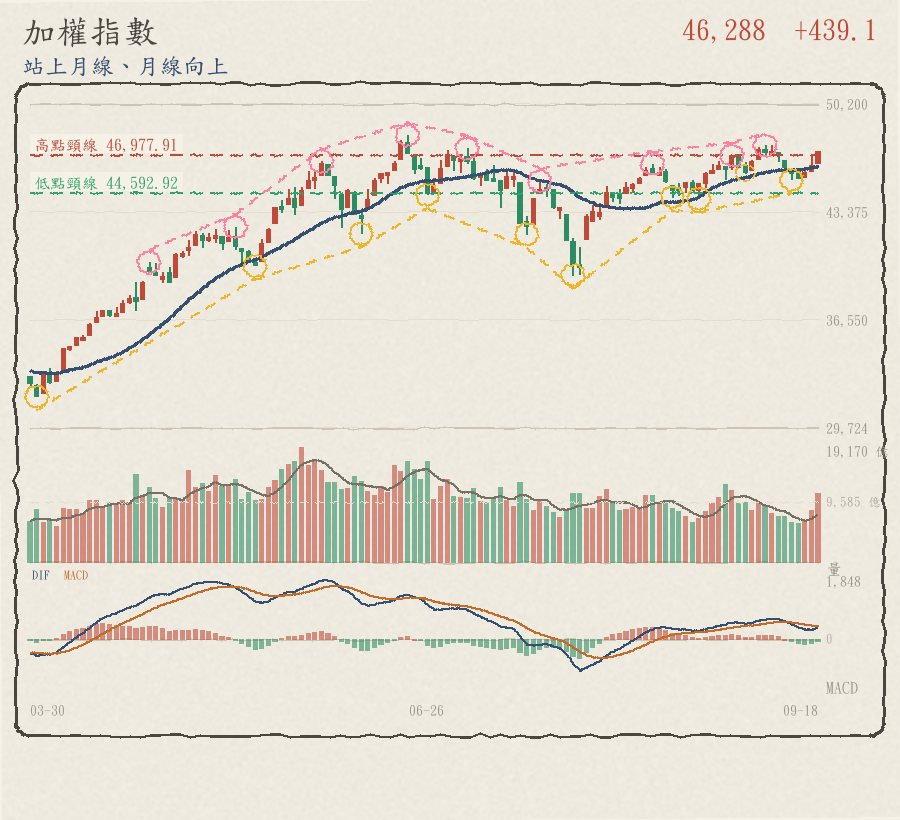
圖說：加權指數日 K（與個股圖相同標記）：黃圈＝轉折低點、粉圈＝轉折高點、虛線小圈＝還沒確認的轉折、藍線＝月線 MA20、水平虛線＝多方／空方頸線。最後一根是資料日當天。
本區塊為公開資料的技術面觀察，不構成投資建議，
不報牌、不預測、不下買賣決策。成交金額為集中市場總成交金額（含 ETF／權證），
與頁首摘要的「上市個股成交金額」口徑不同。標籤是統計，不是評分、也不是推薦。
籌碼趨勢（近 20 個交易日） 資料日 2026-08-21 ~ 2026-09-17
資料源與當日籌碼表完全相同（T86 三大法人全市場合計、MI_MARGN 上市融資），
只是逐日回補：這兩個端點都吃日期參數，所以可以畫趨勢，不是只能拿當日。
上圖：外資／投信／自營商買賣超（正＝買超、負＝賣超，單位張）；下圖：上市融資餘額（張）。
抓不到的交易日直接省略（不用前值替代），本圖為 20 個交易日。
上市 vs 上櫃（同期快篩）
加權 +0.96% vs 櫃買 -0.26%（方向相反，大小型股背離） → 方向相反（大小型股背離）
（兩個市場分開寫，不合併成一個數字；櫃買為 TPEX 公開資料）
櫃買歷史：TPEX 逐日回補 130 根；來源：櫃買中心 www/zh-tw/indexInfo/sectinx（逐日，官方；OpenAPI tpex_index 只回當月）
（TPEX OpenAPI 只回當月，故逐日回補；歷史不足就不算該條均線並標「資料不足」，不用錯數字）
近 20 個交易日大盤狀態回溯（最新在上）（點開看逐日主狀態／量比／量價象限）
用同一支程式回算最近 20 個交易日（主狀態 S1~S8 與量比 20 皆為當日收盤當時的判定，
不是事後調整）；量比 20 未公布的日子寫「—」。
好條件最多的（前 10）
不好條件最多的（前 10）
好條件（8 項）：站上月線、月線向上、底底高、頭頭高、突破頸線、相對大盤強、外資買超、量價攻擊（收紅＋大量）。
不好條件（8 項）：跌破前低、今日下跌、相對大盤弱、在月線之下、量增下跌（出貨）、外資賣超、月線下彎、收盤跌破前一日低點。
兩邊都是同一組資料（日線結構＋當日收盤量價籌碼）算出來的「符合項目數」，只是方向相反；
條件數不是評分、也不是推薦，不構成投資建議。
上升趨勢：底底高 ＋ 頭頭高（13 上市 10／上櫃 3）
量價攻擊（收紅＋大量）（13 上市 8／上櫃 5）
逐檔分析（50 檔）
底部墊高、未過前高 成交金額 439.33 億・全榜第 1 名（上市第 1 名）
好條件 6/8：站上月線、月線向上、底底高、相對大盤強、外資買超、量價攻擊（收紅＋大量）
不好條件 0/8：無
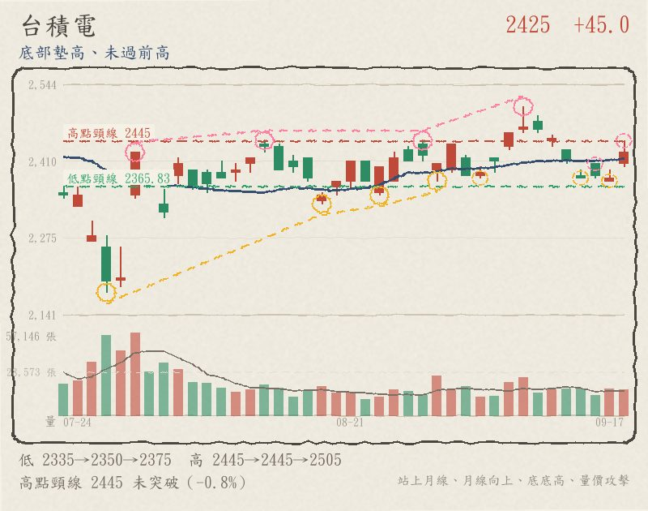
今天收紅、站上月線 2414.25，離頸線 2445 還差 0.8%，底部還在墊高（但高點沒同步創高）。
- 月線位置：收盤 2425 在月線 2414.25 之上；5 日線 2396 也在月線之下（短均在下）；月線向上、5 日線走平或向下
- 量能：成交量是 20 日均量的 1.02 倍，跟 20 日均量差不多
- 關鍵價位：頸線 2445 還沒突破，差 0.8%；最近轉折高點 2505（低於 3.2%）；最近轉折低點 2375（高於 2.1%）
- 轉折結構：低點 2335、2350、2375 墊高 1.7%（底底高），但高點 2445、2445、2505 沒有同步創高；還沒確認的轉折低點 09-14 2380、09-16 2375；還沒確認的轉折高點 09-15 2405、09-17 2445（圖上虛線小圈）
上升趨勢（底底高＋頭頭高） 成交金額 377.44 億・全榜第 2 名（上市第 2 名）
好條件 8/8：站上月線、月線向上、底底高、頭頭高、突破頸線、相對大盤強、外資買超、量價攻擊（收紅＋大量）
不好條件 0/8：無
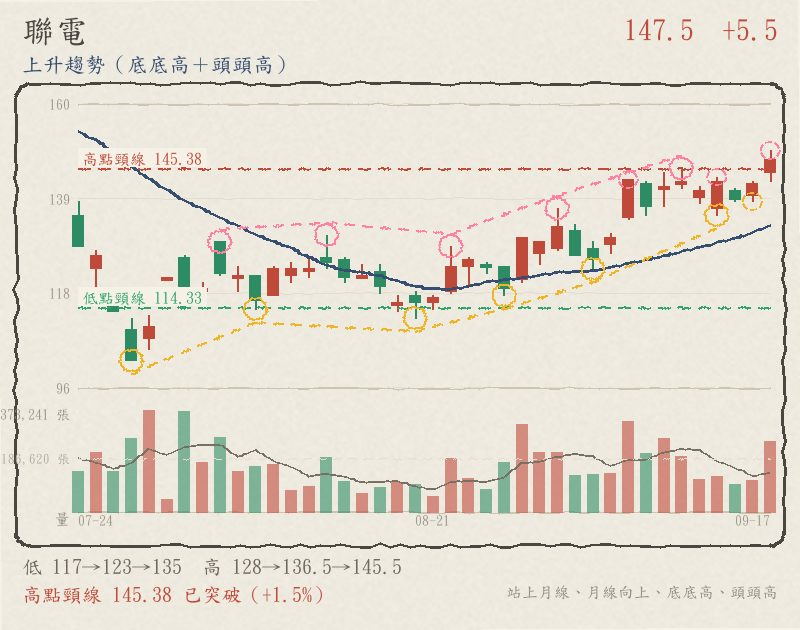
今天帶量收紅、站上月線 132.725，已突破頸線 145.5，轉折結構仍是底底高＋頭頭高。
- 月線位置：收盤 147.5 在月線 132.725 之上；5 日線 142.2 也在月線之上（短均在上）；月線向上、5 日線向上
- 量能：成交量是 20 日均量的 1.51 倍，比 20 日均量大不少；收紅又量增，量價配合
- 關鍵價位：頸線 145.5 已站上；最近轉折高點 145.5（高於 1.4%）；最近轉折低點 135（高於 9.3%）
- 轉折結構：低點 117、123、135 一路墊高 15.4%、高點 128、136.5、145.5 也一路墊高 13.7%，是底底高＋頭頭高；還沒確認的轉折低點 09-16 138；還沒確認的轉折高點 09-14 143.5、09-17 149.5（圖上虛線小圈）
高點墊高、底部不穩 成交金額 298.77 億・全榜第 3 名（上市第 3 名）
好條件 5/8：站上月線、月線向上、頭頭高、突破頸線、外資買超
不好條件 2/8：今日下跌、相對大盤弱
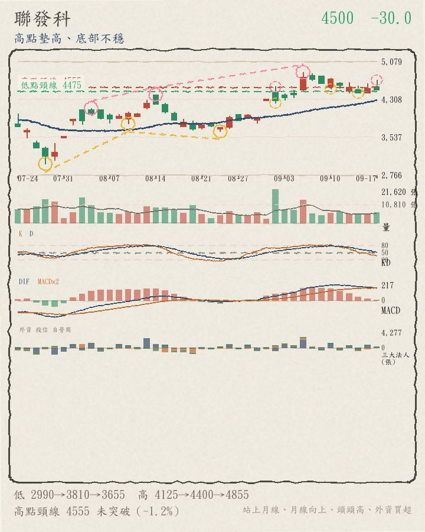
今天收黑、成交量也比平均少、站上月線 4288.75，已突破頸線 4400，高點還在墊高（但底部沒同步墊高）。
- 月線位置：收盤 4500 在月線 4288.75 之上；5 日線 4521 也在月線之上（短均在上）；月線向上、5 日線走平或向下
- 量能：成交量是 20 日均量的 0.90 倍，比 20 日均量少一些
- 關鍵價位：頸線 4400 已站上；最近轉折高點 4855（低於 7.3%）；最近轉折低點 3655（高於 23.1%）
- 轉折結構：高點 4125、4400、4855 墊高 17.7%（頭頭高），但低點 2990、3810、3655 沒有同步墊高；還沒確認的轉折低點 09-10 4520、09-15 4430；還沒確認的轉折高點 09-02 4565、09-17 4700（圖上虛線小圈）
區間或轉弱 成交金額 279.15 億・全榜第 5 名（上市第 4 名）
好條件 1/8：外資買超
不好條件 7/8：跌破前低、今日下跌、相對大盤弱、在月線之下、量增下跌（出貨）、月線下彎、收盤跌破前一日低點
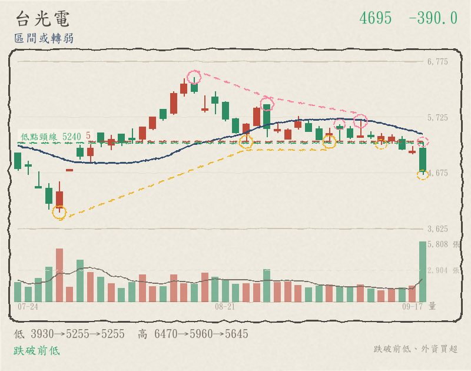
今天帶量收黑、跌破月線 5402.75，跌破前一個轉折低點（頸線 5960 還在收盤上方），轉折還沒走出明顯方向。
- 月線位置：收盤 4695 在月線 5402.75 之下；5 日線 5121 也在月線之下（短均在下）；月線走平或向下、5 日線走平或向下
- 量能：成交量是 20 日均量的 3.50 倍，比 20 日均量大不少；收黑卻量增，量價背離
- 關鍵價位：頸線 5960 還沒突破、還在收盤上方 21.2%；最近轉折高點 5645（低於 16.8%）；最近轉折低點 5255（低於 10.7%）
- 轉折結構：低點 3930、5255、5255 與高點 6470、5960、5645 都沒有明顯遞增，屬於區間震盪或轉弱；還沒確認的轉折低點 09-11 5210、09-17 4635；還沒確認的轉折高點 09-07 5580、09-17 5255（圖上虛線小圈）
區間或轉弱 成交金額 222.63 億・全榜第 7 名（上市第 5 名）
好條件 1/8：外資買超
不好條件 4/8：今日下跌、相對大盤弱、在月線之下、月線下彎
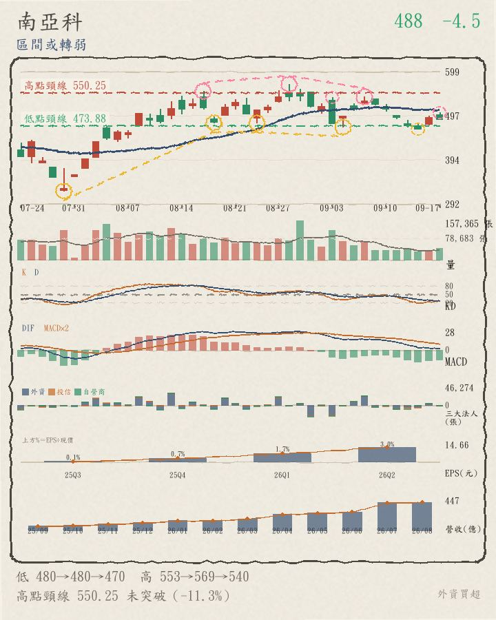
今天收黑、成交量也比平均少、跌破月線 509.375，離頸線 569 還差 14.2%，轉折還沒走出明顯方向。
- 月線位置：收盤 488 在月線 509.375 之下；5 日線 482.4 也在月線之下（短均在下）；月線走平或向下、5 日線走平或向下
- 量能：成交量是 20 日均量的 0.67 倍，比 20 日均量少很多
- 關鍵價位：頸線 569 還沒突破，差 14.2%；最近轉折高點 540（低於 9.6%）；最近轉折低點 470（高於 3.8%）
- 轉折結構：低點 480、480、470 與高點 553、569、540 都沒有明顯遞增，屬於區間震盪或轉弱；還沒確認的轉折低點 09-15 465.5；還沒確認的轉折高點 09-03 539、09-17 504（圖上虛線小圈）
底部墊高、未過前高 成交金額 218.58 億・全榜第 8 名（上市第 6 名）
好條件 5/8：站上月線、月線向上、底底高、相對大盤強、量價攻擊（收紅＋大量）
不好條件 1/8：外資賣超
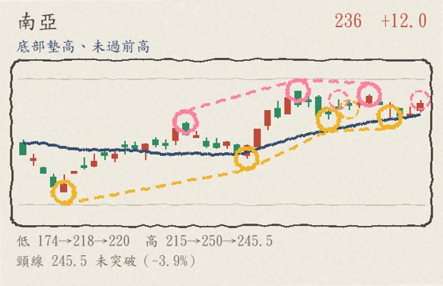
今天帶量收紅、站上月線 223.625，離頸線 245.5 還差 3.9%，底部還在墊高（但高點沒同步創高）。
- 月線位置：收盤 236 在月線 223.625 之上；5 日線 230 也在月線之上（短均在上）；月線向上、5 日線走平或向下
- 量能：成交量是 20 日均量的 1.06 倍，比 20 日均量大一些；收紅又量增，量價配合
- 關鍵價位：頸線 245.5 還沒突破，差 3.9%；最近轉折高點 245.5（低於 3.9%）；最近轉折低點 220.5（高於 7.0%）
- 轉折結構：低點 174、218、220.5 墊高 26.7%（底底高），但高點 215、250、245.5 沒有同步創高；還沒確認的轉折低點 09-08 229；還沒確認的轉折高點 09-07 240、09-17 239.5（圖上虛線小圈）
區間或轉弱 成交金額 209.18 億・全榜第 9 名（上市第 7 名）
好條件 0/8：無
不好條件 4/8：相對大盤弱、在月線之下、外資賣超、月線下彎
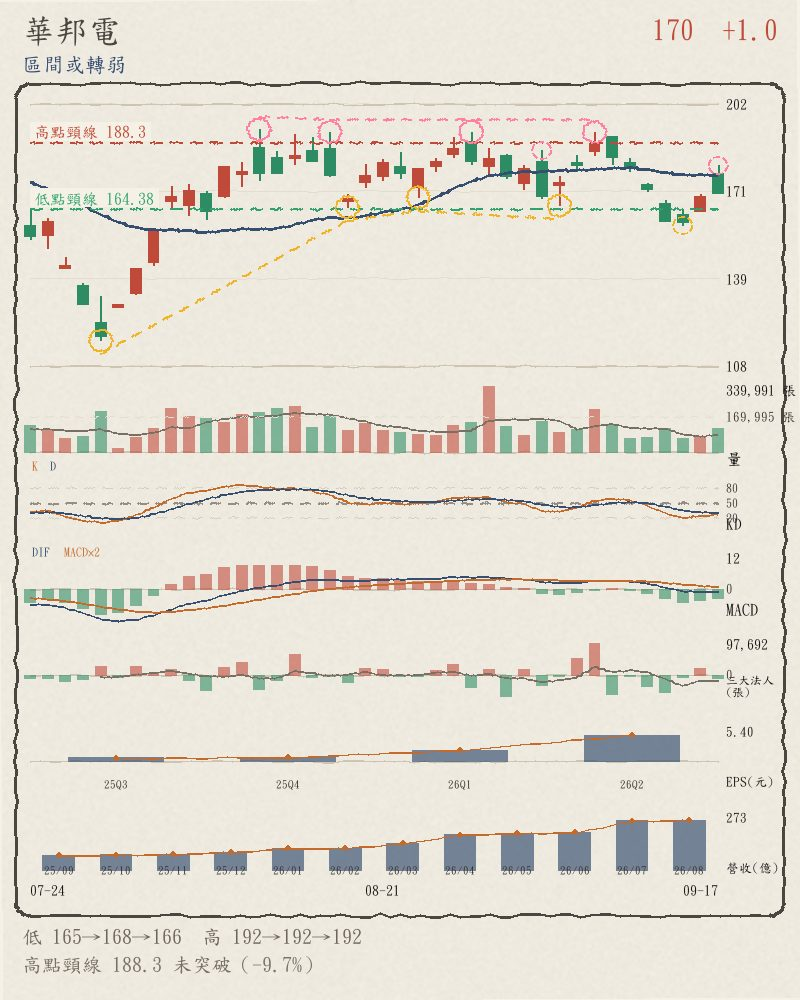
今天收紅、但成交量比平均少、跌破月線 176.35，離頸線 192 還差 11.5%，轉折還沒走出明顯方向。
- 月線位置：收盤 170 在月線 176.35 之下；5 日線 166 也在月線之下（短均在下）；月線走平或向下、5 日線走平或向下
- 量能：成交量是 20 日均量的 0.95 倍，跟 20 日均量差不多；收紅但量縮，量價背離
- 關鍵價位：頸線 192 還沒突破，差 11.5%；最近轉折高點 192（低於 11.5%）；最近轉折低點 165.5（高於 2.7%）
- 轉折結構：低點 165、168.5、165.5 與高點 192、192、192 都沒有明顯遞增，屬於區間震盪或轉弱；還沒確認的轉折低點 09-15 158.5；還沒確認的轉折高點 09-03 185.5、09-17 180（圖上虛線小圈）
區間或轉弱 成交金額 191.42 億・全榜第 10 名（上市第 8 名）
好條件 1/8：月線向上
不好條件 6/8：今日下跌、相對大盤弱、在月線之下、量增下跌（出貨）、外資賣超、收盤跌破前一日低點
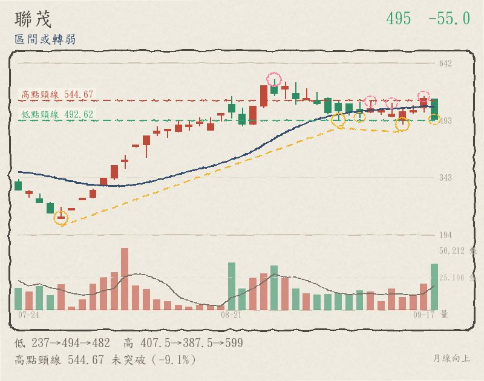
今天帶量收黑、跌破月線 528.475，離頸線 599 還差 17.4%，轉折還沒走出明顯方向。
- 月線位置：收盤 495 在月線 528.475 之下；5 日線 517.6 也在月線之下（短均在下）；月線向上、5 日線向上
- 量能：成交量是 20 日均量的 2.13 倍，比 20 日均量大不少；收黑卻量增，量價背離
- 關鍵價位：頸線 599 還沒突破，差 17.4%；最近轉折高點 599（低於 17.4%）；最近轉折低點 482（高於 2.7%）
- 轉折結構：低點 237、493.5、482 與高點 407.5、387.5、599 都沒有明顯遞增，屬於區間震盪或轉弱；還沒確認的轉折低點 09-08 500、09-17 495；還沒確認的轉折高點 09-11 537、09-16 555（圖上虛線小圈）
區間或轉弱 成交金額 185.35 億・全榜第 11 名（上市第 9 名）
好條件 0/8：無
不好條件 6/8：今日下跌、相對大盤弱、在月線之下、量增下跌（出貨）、外資賣超、月線下彎
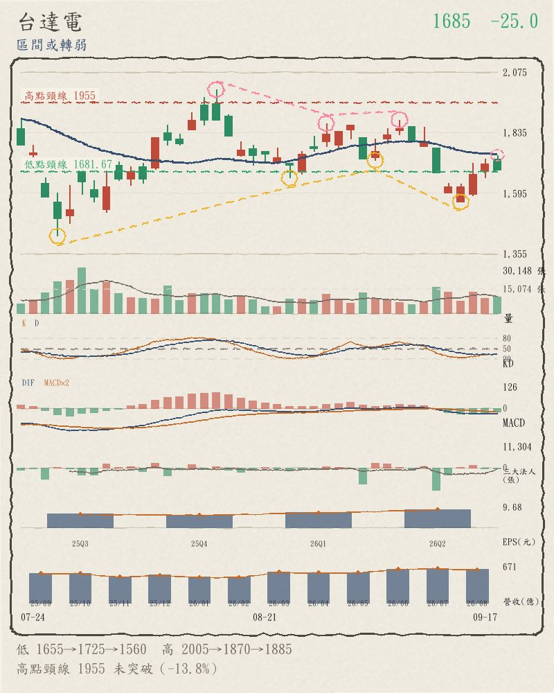
今天帶量收黑、跌破月線 1749.75，離頸線 1885 還差 10.6%，轉折還沒走出明顯方向。
- 月線位置：收盤 1685 在月線 1749.75 之下；5 日線 1661 也在月線之下（短均在下）；月線走平或向下、5 日線走平或向下
- 量能：成交量是 20 日均量的 1.15 倍，比 20 日均量大不少；收黑卻量增，量價背離
- 關鍵價位：頸線 1885 還沒突破，差 10.6%；最近轉折高點 1885（低於 10.6%）；最近轉折低點 1560（高於 8.0%）
- 轉折結構：低點 1655、1725、1560 與高點 2005、1870、1885 都沒有明顯遞增，屬於區間震盪或轉弱；還沒確認的轉折高點 09-17 1745（圖上虛線小圈）
區間或轉弱 成交金額 161.37 億・全榜第 12 名（上市第 10 名）
好條件 1/8：外資買超
不好條件 4/8：今日下跌、相對大盤弱、在月線之下、月線下彎
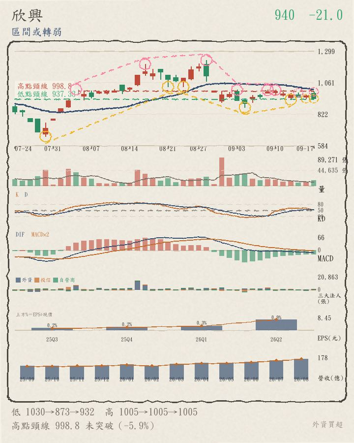
今天收黑、成交量也比平均少、跌破月線 1008.1，離頸線 1005 還差 6.5%，轉折還沒走出明顯方向。
- 月線位置：收盤 940 在月線 1008.1 之下；5 日線 959.8 也在月線之下（短均在下）；月線走平或向下、5 日線向上
- 量能：成交量是 20 日均量的 0.75 倍，比 20 日均量少很多
- 關鍵價位：頸線 1005 還沒突破，差 6.5%；最近轉折高點 1005（低於 6.5%）；最近轉折低點 932（高於 0.9%）
- 轉折結構：低點 1030、873、932 與高點 1005、1005、1005 都沒有明顯遞增，屬於區間震盪或轉弱；還沒確認的轉折低點 09-16 940、09-17 940；還沒確認的轉折高點 09-15 986、09-17 993（圖上虛線小圈）
區間或轉弱 成交金額 157.04 億・全榜第 13 名（上市第 11 名）
好條件 5/8：站上月線、月線向上、相對大盤強、外資買超、量價攻擊（收紅＋大量）
不好條件 0/8：無
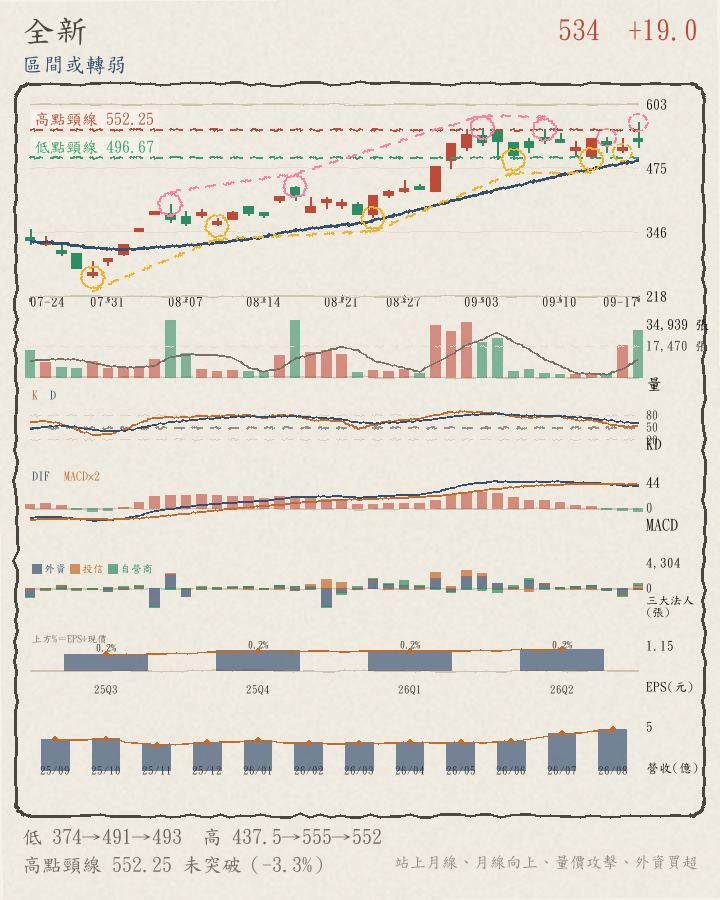
今天帶量收紅、站上月線 489.85，離頸線 552 還差 3.3%，轉折還沒走出明顯方向。
- 月線位置：收盤 534 在月線 489.85 之上；5 日線 523.8 也在月線之上（短均在上）；月線向上、5 日線向上
- 量能：成交量是 20 日均量的 2.58 倍，比 20 日均量大不少；收紅又量增，量價配合
- 關鍵價位：頸線 552 還沒突破，差 3.3%；最近轉折高點 552（低於 3.3%）；最近轉折低點 493（高於 8.3%）
- 轉折結構：低點 374.5、491、493 與高點 437.5、555、552 都沒有明顯遞增，屬於區間震盪或轉弱；還沒確認的轉折低點 09-16 506；還沒確認的轉折高點 09-15 536、09-17 566（圖上虛線小圈）
上升趨勢（底底高＋頭頭高） 成交金額 151.05 億・全榜第 14 名（上市第 12 名）
好條件 7/8：站上月線、月線向上、底底高、頭頭高、突破頸線、相對大盤強、量價攻擊（收紅＋大量）
不好條件 1/8：外資賣超
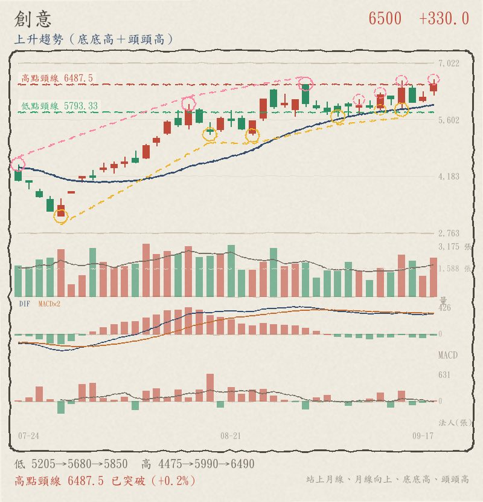
今天帶量收紅、站上月線 5973.25，已突破頸線 6490，轉折結構仍是底底高＋頭頭高。
- 月線位置：收盤 6500 在月線 5973.25 之上；5 日線 6245 也在月線之上（短均在上）；月線向上、5 日線向上
- 量能：成交量是 20 日均量的 1.24 倍，比 20 日均量大不少；收紅又量增，量價配合
- 關鍵價位：頸線 6490 已站上；最近轉折高點 6490（高於 0.2%）；最近轉折低點 5850（高於 11.1%）
- 轉折結構：低點 5205、5680、5850 一路墊高 12.4%、高點 4475、5990、6490 也一路墊高 45.0%，是底底高＋頭頭高；還沒確認的轉折低點 09-10 5850；還沒確認的轉折高點 09-14 6575、09-17 6610（圖上虛線小圈）
底部墊高、未過前高 成交金額 136.43 億・全榜第 17 名（上市第 13 名）
好條件 1/8：底底高
不好條件 8/8：跌破前低、今日下跌、相對大盤弱、在月線之下、量增下跌（出貨）、外資賣超、月線下彎、收盤跌破前一日低點
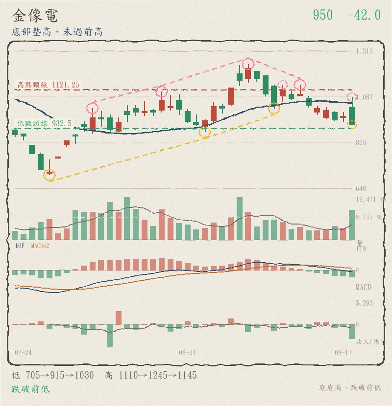
今天帶量收黑、跌破月線 1054.9，跌破前一個轉折低點（頸線 1245 還在收盤上方），底部還在墊高（但高點沒同步創高）。
- 月線位置：收盤 950 在月線 1054.9 之下；5 日線 992.8 也在月線之下（短均在下）；月線走平或向下、5 日線走平或向下
- 量能：成交量是 20 日均量的 1.85 倍，比 20 日均量大不少；收黑卻量增，量價背離
- 關鍵價位：頸線 1245 還沒突破、還在收盤上方 23.7%；最近轉折高點 1145（低於 17.0%）；最近轉折低點 1030（低於 7.8%）
- 轉折結構：低點 705、915、1030 墊高 46.1%（底底高），但高點 1110、1245、1145 沒有同步創高；還沒確認的轉折低點 09-17 950；還沒確認的轉折高點 09-07 1145、09-17 1085（圖上虛線小圈）
上升趨勢（底底高＋頭頭高） 成交金額 132.17 億・全榜第 18 名（上市第 14 名）
好條件 3/8：月線向上、底底高、頭頭高
不好條件 6/8：跌破前低、今日下跌、相對大盤弱、在月線之下、外資賣超、收盤跌破前一日低點
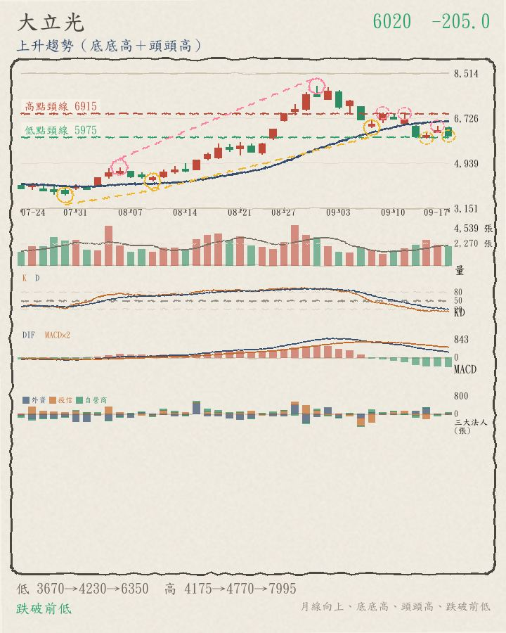
今天收黑、成交量也比平均少、跌破月線 6614，跌破前一個轉折低點（頸線 7995 還在收盤上方），轉折結構仍是底底高＋頭頭高。
- 月線位置：收盤 6020 在月線 6614 之下；5 日線 6191 也在月線之下（短均在下）；月線向上、5 日線走平或向下
- 量能：成交量是 20 日均量的 0.92 倍，比 20 日均量少一些
- 關鍵價位：頸線 7995 還沒突破、還在收盤上方 24.7%；最近轉折高點 7995（低於 24.7%）；最近轉折低點 6350（低於 5.2%）
- 轉折結構：低點 3670、4230、6350 一路墊高 73.0%、高點 4175、4770、7995 也一路墊高 91.5%，是底底高＋頭頭高；還沒確認的轉折低點 09-15 5930、09-17 6020；還沒確認的轉折高點 09-11 6900、09-16 6415（圖上虛線小圈）
區間或轉弱 成交金額 127.13 億・全榜第 19 名（上市第 15 名）
好條件 0/8：無
不好條件 5/8：今日下跌、相對大盤弱、在月線之下、外資賣超、月線下彎
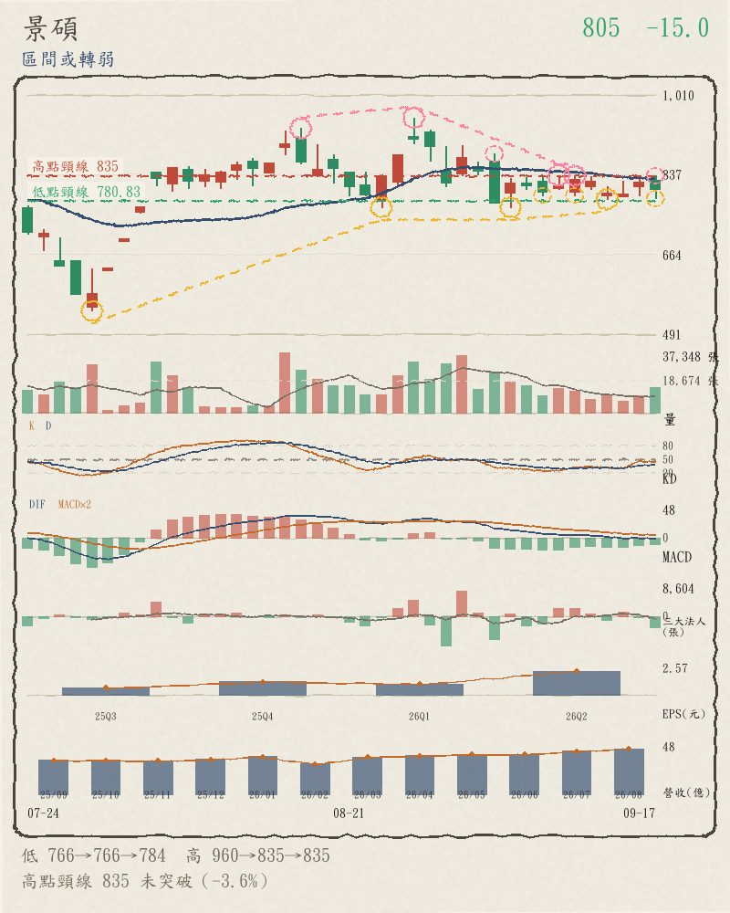
今天收黑、成交量也比平均少、跌破月線 828，離頸線 835 還差 3.6%，轉折還沒走出明顯方向。
- 月線位置：收盤 805 在月線 828 之下；5 日線 808 也在月線之下（短均在下）；月線走平或向下、5 日線走平或向下
- 量能：成交量是 20 日均量的 0.90 倍，比 20 日均量少一些
- 關鍵價位：頸線 835 還沒突破，差 3.6%；最近轉折高點 835（低於 3.6%）；最近轉折低點 784（高於 2.7%）
- 轉折結構：低點 766、766、784 與高點 960、835、835 都沒有明顯遞增，屬於區間震盪或轉弱；還沒確認的轉折低點 09-10 792、09-17 785；還沒確認的轉折高點 09-03 882、09-17 835（圖上虛線小圈）
上升趨勢（底底高＋頭頭高） 成交金額 126.65 億・全榜第 20 名（上市第 16 名）
好條件 3/8：月線向上、底底高、頭頭高
不好條件 4/8：今日下跌、相對大盤弱、在月線之下、外資賣超
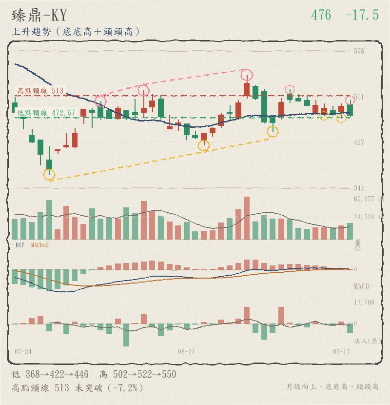
今天收黑、成交量也比平均少、跌破月線 481.7，離頸線 550 還差 13.5%，轉折結構仍是底底高＋頭頭高。
- 月線位置：收盤 476 在月線 481.7 之下；5 日線 486.3 也在月線之上（短均在上）；月線向上、5 日線走平或向下
- 量能：成交量是 20 日均量的 0.95 倍，跟 20 日均量差不多
- 關鍵價位：頸線 550 還沒突破，差 13.5%；最近轉折高點 550（低於 13.5%）；最近轉折低點 446.5（高於 6.6%）
- 轉折結構：低點 368、421.5、446.5 一路墊高 21.3%、高點 502、522、550 也一路墊高 9.6%，是底底高＋頭頭高；還沒確認的轉折低點 09-14 475.5、09-16 471；還沒確認的轉折高點 09-08 524、09-17 504（圖上虛線小圈）
上升趨勢（底底高＋頭頭高） 成交金額 125.33 億・全榜第 21 名（上市第 17 名）
好條件 4/8：月線向上、底底高、頭頭高、外資買超
不好條件 4/8：今日下跌、相對大盤弱、在月線之下、量增下跌（出貨）
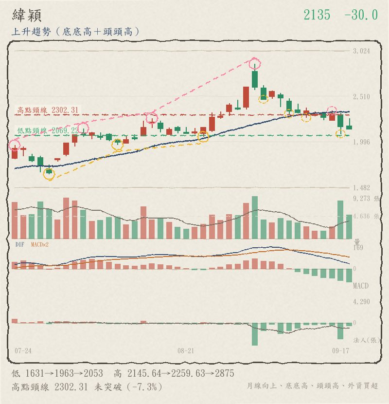
今天帶量收黑、跌破月線 2334.01，離頸線 2259.63 還差 5.5%，轉折結構仍是底底高＋頭頭高。
- 月線位置：收盤 2135 在月線 2334.01 之下；5 日線 2239 也在月線之下（短均在下）；月線向上、5 日線走平或向下
- 量能：成交量是 20 日均量的 1.24 倍，比 20 日均量大不少；收黑卻量增，量價背離
- 關鍵價位：頸線 2259.63 還沒突破，差 5.5%；最近轉折高點 2875（低於 25.7%）；最近轉折低點 2053.44（高於 4.0%）
- 轉折結構：低點 1631.02、1962.92、2053.44 一路墊高 25.9%、高點 2145.64、2259.63、2875 也一路墊高 34.0%，是底底高＋頭頭高；還沒確認的轉折低點 09-10 2270、09-16 2085；還沒確認的轉折高點 09-15 2345（圖上虛線小圈）
區間或轉弱 成交金額 124.34 億・全榜第 22 名（上市第 18 名）
好條件 0/8：無
不好條件 5/8：今日下跌、相對大盤弱、在月線之下、外資賣超、月線下彎
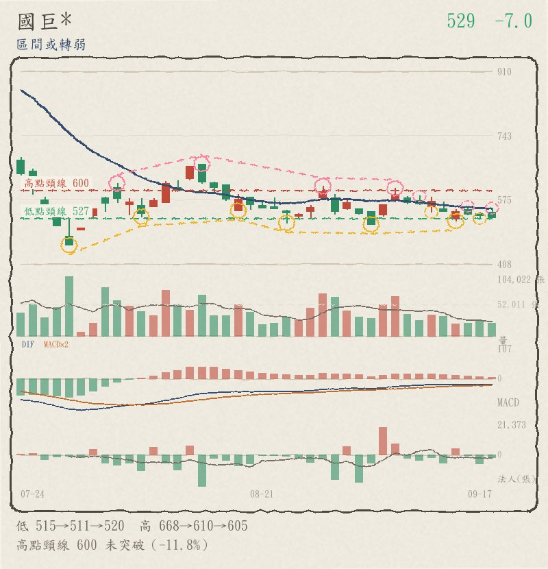
今天收黑、成交量也比平均少、跌破月線 552.4，離頸線 605 還差 12.6%，轉折還沒走出明顯方向。
- 月線位置：收盤 529 在月線 552.4 之下；5 日線 538.2 也在月線之下（短均在下）；月線走平或向下、5 日線走平或向下
- 量能：成交量是 20 日均量的 0.57 倍，比 20 日均量少很多
- 關鍵價位：頸線 605 還沒突破，差 12.6%；最近轉折高點 605（低於 12.6%）；最近轉折低點 520（高於 1.7%）
- 轉折結構：低點 515、511、520 與高點 668、610、605 都沒有明顯遞增，屬於區間震盪或轉弱；還沒確認的轉折低點 09-10 543、09-16 526；還沒確認的轉折高點 09-15 558、09-17 553（圖上虛線小圈）
高點墊高、底部不穩 成交金額 111.73 億・全榜第 24 名（上市第 19 名）
好條件 3/8：站上月線、月線向上、頭頭高
不好條件 4/8：今日下跌、相對大盤弱、量增下跌（出貨）、外資賣超
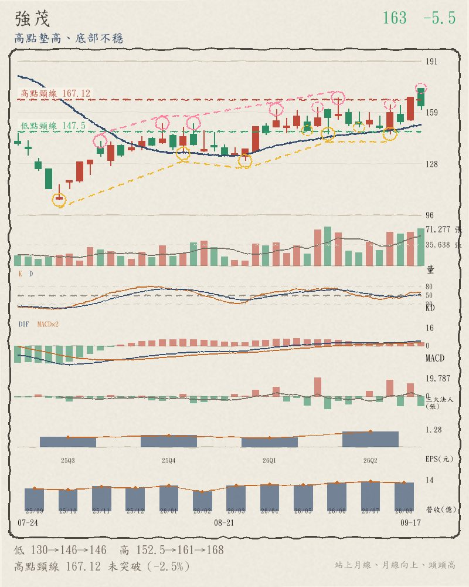
今天帶量收黑、站上月線 151.7，離頸線 168 還差 3.0%，高點還在墊高（但底部沒同步墊高）。
- 月線位置：收盤 163 在月線 151.7 之上；5 日線 158.8 也在月線之上（短均在上）；月線向上、5 日線向上
- 量能：成交量是 20 日均量的 1.77 倍，比 20 日均量大不少；收黑卻量增，量價背離
- 關鍵價位：頸線 168 還沒突破，差 3.0%；最近轉折高點 168（低於 3.0%）；最近轉折低點 146（高於 11.6%）
- 轉折結構：高點 152.5、161、168 墊高 10.2%（頭頭高），但低點 129.5、146、146 沒有同步墊高；還沒確認的轉折低點 09-02 148、09-09 150；還沒確認的轉折高點 09-14 164、09-17 174（圖上虛線小圈）
區間或轉弱 成交金額 111.23 億・全榜第 25 名（上市第 20 名）
好條件 5/8：站上月線、月線向上、相對大盤強、外資買超、量價攻擊（收紅＋大量）
不好條件 0/8：無
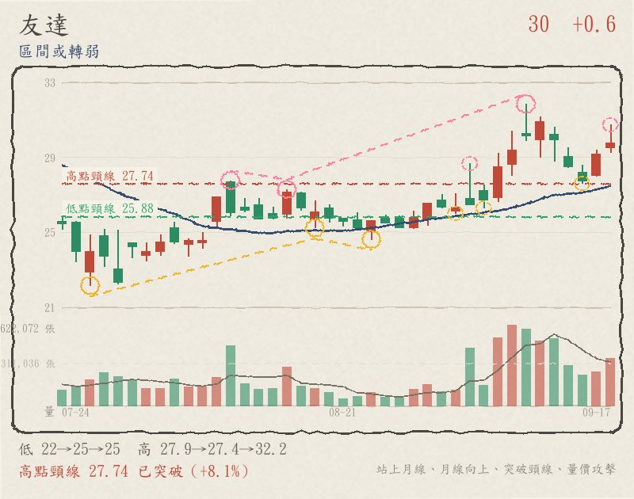
今天帶量收紅、站上月線 27.605，離頸線 32.2 還差 6.8%，轉折還沒走出明顯方向。
- 月線位置：收盤 30 在月線 27.605 之上；5 日線 29.24 也在月線之上（短均在上）；月線向上、5 日線走平或向下
- 量能：成交量是 20 日均量的 1.43 倍，比 20 日均量大不少；收紅又量增，量價配合
- 關鍵價位：頸線 32.2 還沒突破，差 6.8%；最近轉折高點 32.2（低於 6.8%）；最近轉折低點 24.6（高於 22.0%）
- 轉折結構：低點 22、25.25、24.6 與高點 27.9、27.4、32.2 都沒有明顯遞增，屬於區間震盪或轉弱；還沒確認的轉折低點 09-04 26.35、09-15 27.75；還沒確認的轉折高點 09-03 28.85、09-17 31.05（圖上虛線小圈）
區間或轉弱 成交金額 106.76 億・全榜第 26 名（上市第 21 名）
好條件 0/8：無
不好條件 8/8：跌破前低、今日下跌、相對大盤弱、在月線之下、量增下跌（出貨）、外資賣超、月線下彎、收盤跌破前一日低點
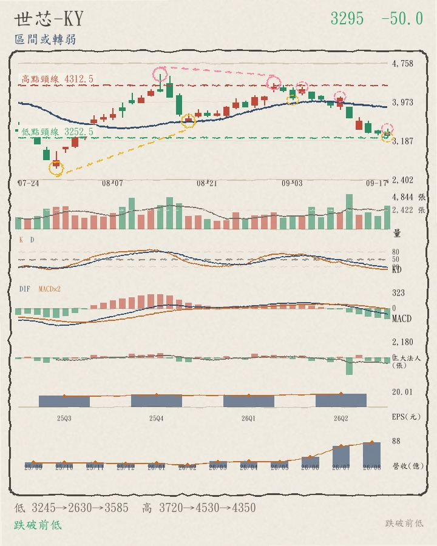
今天帶量收黑、跌破月線 3864，跌破前一個轉折低點（頸線 4530 還在收盤上方），轉折還沒走出明顯方向。
- 月線位置：收盤 3295 在月線 3864 之下；5 日線 3447 也在月線之下（短均在下）；月線走平或向下、5 日線走平或向下
- 量能：成交量是 20 日均量的 1.58 倍，比 20 日均量大不少；收黑卻量增，量價背離
- 關鍵價位：頸線 4530 還沒突破、還在收盤上方 27.3%；最近轉折高點 4350（低於 24.3%）；最近轉折低點 3585（低於 8.1%）
- 轉折結構：低點 3245、2630、3585 與高點 3720、4530、4350 都沒有明顯遞增，屬於區間震盪或轉弱；還沒確認的轉折低點 09-03 4010、09-17 3260；還沒確認的轉折高點 09-10 4075、09-17 3430（圖上虛線小圈）
上升趨勢（底底高＋頭頭高） 成交金額 105.65 億・全榜第 27 名（上市第 22 名）
好條件 4/8：站上月線、月線向上、底底高、頭頭高
不好條件 4/8：今日下跌、相對大盤弱、量增下跌（出貨）、外資賣超
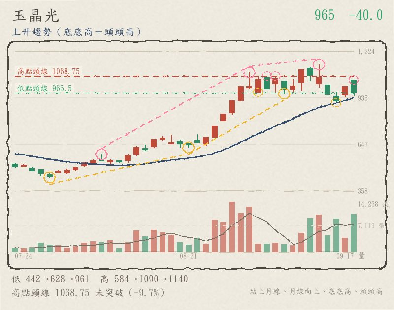
今天帶量收黑、站上月線 934.55，離頸線 1090 還差 11.5%，轉折結構仍是底底高＋頭頭高。
- 月線位置：收盤 965 在月線 934.55 之上；5 日線 979.8 也在月線之上（短均在上）；月線向上、5 日線走平或向下
- 量能：成交量是 20 日均量的 1.77 倍，比 20 日均量大不少；收黑卻量增，量價背離
- 關鍵價位：頸線 1090 還沒突破，差 11.5%；最近轉折高點 1140（低於 15.4%）；最近轉折低點 961（高於 0.4%）
- 轉折結構：低點 442、628、961 一路墊高 117.4%、高點 584、1090、1140 也一路墊高 95.2%，是底底高＋頭頭高；還沒確認的轉折低點 09-02 970、09-15 906；還沒確認的轉折高點 09-04 1070、09-17 1045（圖上虛線小圈）
上升趨勢（底底高＋頭頭高） 成交金額 104.45 億・全榜第 28 名（上市第 23 名）
好條件 4/8：站上月線、月線向上、底底高、頭頭高
不好條件 4/8：今日下跌、相對大盤弱、量增下跌（出貨）、外資賣超
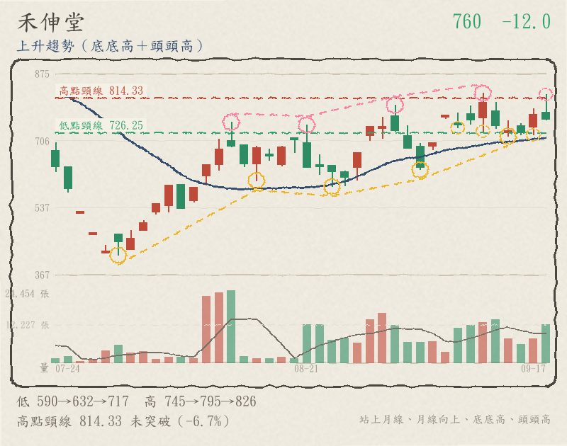
今天帶量收黑、站上月線 712.55，離頸線 826 還差 8.0%，轉折結構仍是底底高＋頭頭高。
- 月線位置：收盤 760 在月線 712.55 之上；5 日線 746.6 也在月線之上（短均在上）；月線向上、5 日線走平或向下
- 量能：成交量是 20 日均量的 1.34 倍，比 20 日均量大不少；收黑卻量增，量價背離
- 關鍵價位：頸線 826 還沒突破，差 8.0%；最近轉折高點 826（低於 8.0%）；最近轉折低點 717（高於 6.0%）
- 轉折結構：低點 590、632、717 一路墊高 21.5%、高點 745、795、826 也一路墊高 10.9%，是底底高＋頭頭高；還沒確認的轉折低點 09-10 730、09-16 720；還沒確認的轉折高點 09-17 822（圖上虛線小圈）
上升趨勢（底底高＋頭頭高） 成交金額 98.47 億・全榜第 29 名（上市第 24 名）
好條件 3/8：月線向上、底底高、頭頭高
不好條件 4/8：跌破前低、相對大盤弱、在月線之下、外資賣超
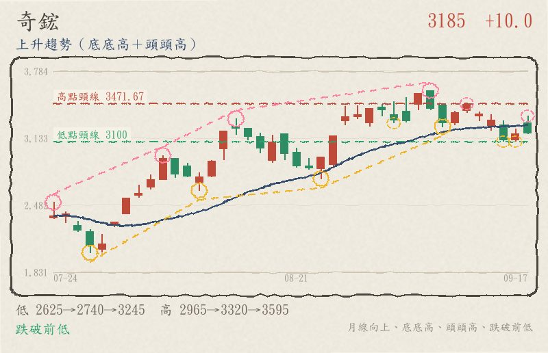
今天收紅、但成交量比平均少、跌破月線 3262，跌破前一個轉折低點（頸線 3595 還在收盤上方），轉折結構仍是底底高＋頭頭高。
- 月線位置：收盤 3185 在月線 3262 之下；5 日線 3231 也在月線之下（短均在下）；月線向上、5 日線走平或向下
- 量能：成交量是 20 日均量的 0.93 倍，比 20 日均量少一些；收紅但量縮，量價背離
- 關鍵價位：頸線 3595 還沒突破、還在收盤上方 11.4%；最近轉折高點 3595（低於 11.4%）；最近轉折低點 3245（低於 1.8%）
- 轉折結構：低點 2625、2740、3245 一路墊高 23.6%、高點 2965、3320、3595 也一路墊高 21.2%，是底底高＋頭頭高；還沒確認的轉折低點 09-15 3100、09-16 3100；還沒確認的轉折高點 09-10 3470、09-17 3350（圖上虛線小圈）
區間或轉弱 成交金額 88.74 億・全榜第 32 名（上市第 25 名）
好條件 0/8：無
不好條件 5/8：今日下跌、相對大盤弱、在月線之下、外資賣超、月線下彎
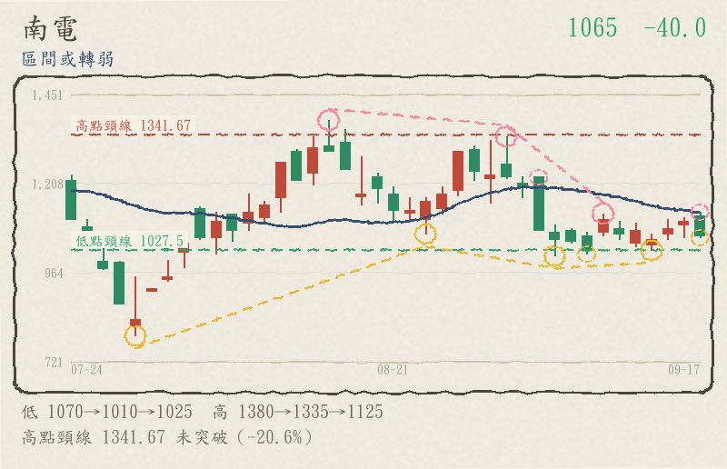
今天收黑、成交量也比平均少、跌破月線 1129，離頸線 1125 還差 5.3%，轉折還沒走出明顯方向。
- 月線位置：收盤 1065 在月線 1129 之下；5 日線 1078 也在月線之下（短均在下）；月線走平或向下、5 日線向上
- 量能：成交量是 20 日均量的 0.75 倍，比 20 日均量少很多
- 關鍵價位：頸線 1125 還沒突破，差 5.3%；最近轉折高點 1125（低於 5.3%）；最近轉折低點 1025（高於 3.9%）
- 轉折結構：低點 1070、1010、1025 與高點 1380、1335、1125 都沒有明顯遞增，屬於區間震盪或轉弱；還沒確認的轉折低點 09-08 1015、09-17 1060；還沒確認的轉折高點 09-03 1225、09-17 1130（圖上虛線小圈）
上升趨勢（底底高＋頭頭高） 成交金額 88.39 億・全榜第 33 名（上市第 26 名）
好條件 2/8：底底高、頭頭高
不好條件 6/8：今日下跌、相對大盤弱、在月線之下、量增下跌（出貨）、外資賣超、月線下彎
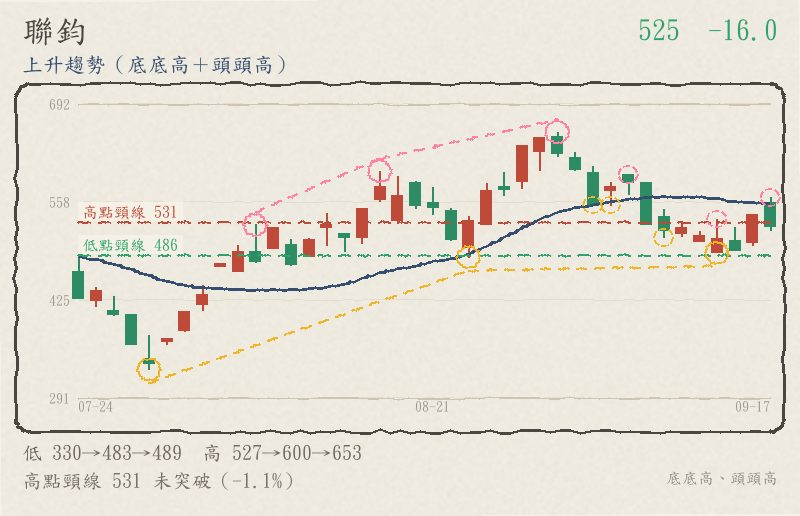
今天帶量收黑、跌破月線 555.975，離頸線 653 還差 19.6%，轉折結構仍是底底高＋頭頭高。
- 月線位置：收盤 525 在月線 555.975 之下；5 日線 515.9 也在月線之下（短均在下）；月線走平或向下、5 日線走平或向下
- 量能：成交量是 20 日均量的 1.70 倍，比 20 日均量大不少；收黑卻量增，量價背離
- 關鍵價位：頸線 653 還沒突破，差 19.6%；最近轉折高點 653（低於 19.6%）；最近轉折低點 489（高於 7.4%）
- 轉折結構：低點 330、483、489 一路墊高 48.2%、高點 527、600、653 也一路墊高 23.9%，是底底高＋頭頭高；還沒確認的轉折低點 09-04 554、09-09 510；還沒確認的轉折高點 09-14 535、09-17 564（圖上虛線小圈）
上升趨勢（底底高＋頭頭高） 成交金額 85.14 億・全榜第 35 名（上市第 27 名）
好條件 5/8：站上月線、底底高、頭頭高、相對大盤強、外資買超
不好條件 1/8：月線下彎
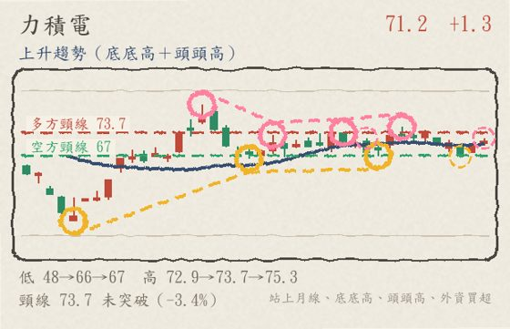
今天收紅、但成交量比平均少、站上月線 70.455，離頸線 73.7 還差 3.4%，轉折結構仍是底底高＋頭頭高。
- 月線位置：收盤 71.2 在月線 70.455 之上；5 日線 69.88 也在月線之下（短均在下）；月線走平或向下、5 日線走平或向下
- 量能：成交量是 20 日均量的 0.86 倍，比 20 日均量少一些；收紅但量縮，量價背離
- 關鍵價位：頸線 73.7 還沒突破，差 3.4%；最近轉折高點 75.3（低於 5.4%）；最近轉折低點 67（高於 6.3%）
- 轉折結構：低點 48、66.2、67 一路墊高 39.6%、高點 72.9、73.7、75.3 也一路墊高 3.3%，是底底高＋頭頭高；還沒確認的轉折低點 09-15 66.7；還沒確認的轉折高點 09-03 72、09-17 72（圖上虛線小圈）
區間或轉弱 成交金額 80.75 億・全榜第 36 名（上市第 28 名）
好條件 1/8：外資買超
不好條件 7/8：跌破前低、今日下跌、相對大盤弱、在月線之下、量增下跌（出貨）、月線下彎、收盤跌破前一日低點
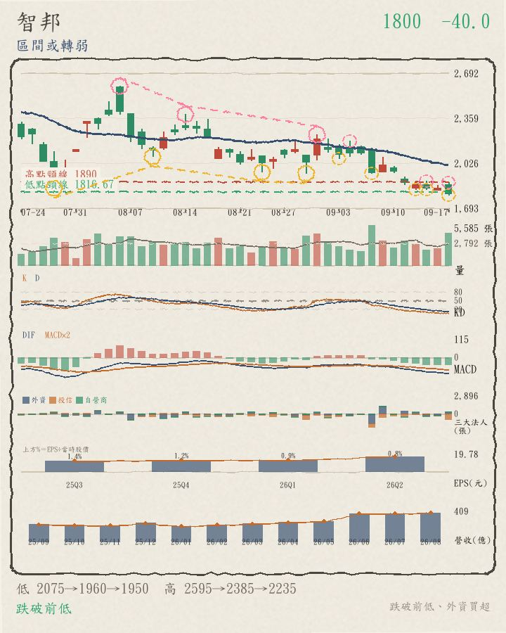
今天帶量收黑、跌破月線 2012.5，跌破前一個轉折低點（頸線 2235 還在收盤上方），轉折還沒走出明顯方向。
- 月線位置：收盤 1800 在月線 2012.5 之下；5 日線 1848 也在月線之下（短均在下）；月線走平或向下、5 日線走平或向下
- 量能：成交量是 20 日均量的 1.55 倍，比 20 日均量大不少；收黑卻量增，量價背離
- 關鍵價位：頸線 2235 還沒突破、還在收盤上方 19.5%；最近轉折高點 2235（低於 19.5%）；最近轉折低點 1950（低於 7.7%）
- 轉折結構：低點 2075、1960、1950 與高點 2595、2385、2235 都沒有明顯遞增，屬於區間震盪或轉弱；還沒確認的轉折低點 09-15 1830、09-17 1790；還沒確認的轉折高點 09-15 1895、09-17 1885（圖上虛線小圈）
區間或轉弱 成交金額 69.28 億・全榜第 38 名（上市第 29 名）
好條件 4/8：站上月線、月線向上、相對大盤強、外資買超
不好條件 0/8：無
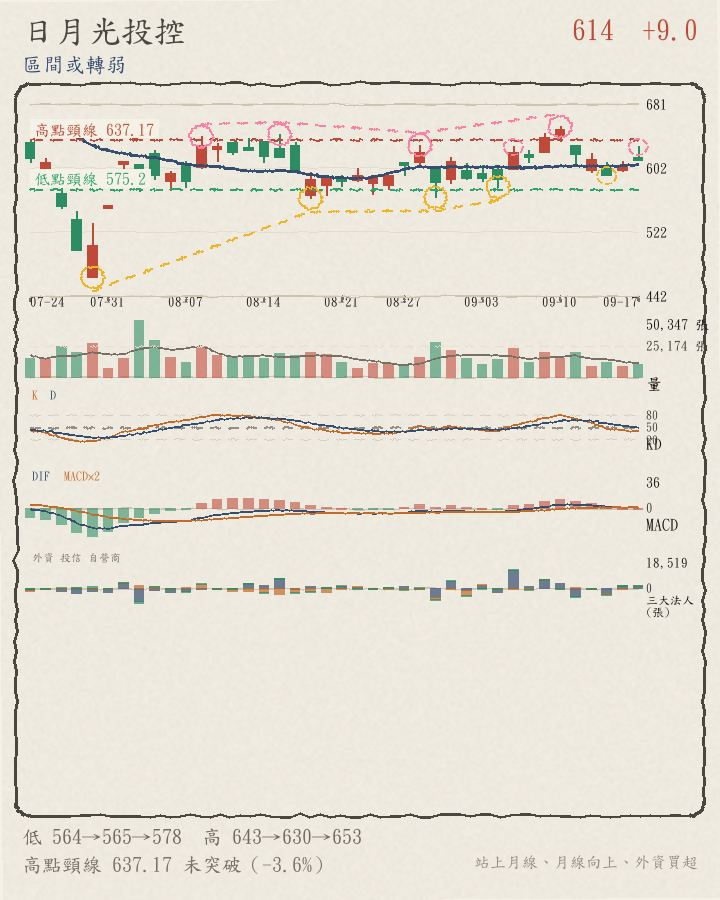
今天收紅、但成交量比平均少、站上月線 605.9，離頸線 653 還差 6.0%，轉折還沒走出明顯方向。
- 月線位置：收盤 614 在月線 605.9 之上；5 日線 608.2 也在月線之上（短均在上）；月線向上、5 日線走平或向下
- 量能：成交量是 20 日均量的 0.69 倍，比 20 日均量少很多；收紅但量縮，量價背離
- 關鍵價位：頸線 653 還沒突破，差 6.0%；最近轉折高點 653（低於 6.0%）；最近轉折低點 578（高於 6.2%）
- 轉折結構：低點 564、565、578 與高點 643、630、653 都沒有明顯遞增，屬於區間震盪或轉弱；還沒確認的轉折低點 09-15 592；還沒確認的轉折高點 09-07 628、09-17 628（圖上虛線小圈）
區間或轉弱 成交金額 69 億・全榜第 39 名（上市第 30 名）
好條件 1/8：站上月線
不好條件 4/8：今日下跌、相對大盤弱、外資賣超、月線下彎
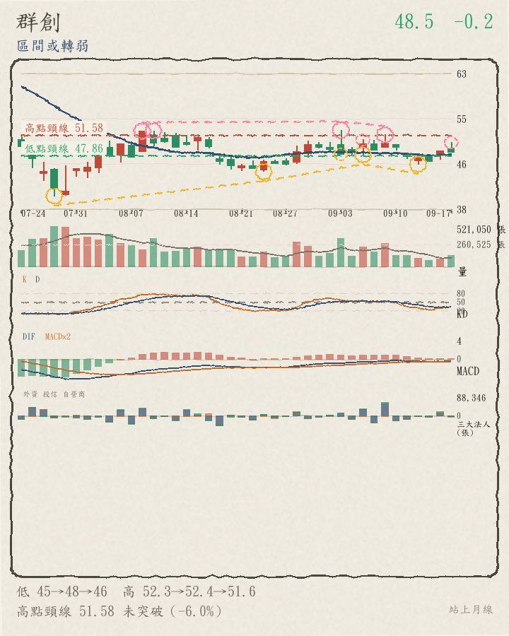
今天收黑、成交量也比平均少、站上月線 48.095，離頸線 51.6 還差 6.0%，轉折還沒走出明顯方向。
- 月線位置：收盤 48.5 在月線 48.095 之上；5 日線 47.87 也在月線之下（短均在下）；月線走平或向下、5 日線走平或向下
- 量能：成交量是 20 日均量的 0.77 倍，比 20 日均量少很多
- 關鍵價位：頸線 51.6 還沒突破，差 6.0%；最近轉折高點 51.6（低於 6.0%）；最近轉折低點 46.25（高於 4.9%）
- 轉折結構：低點 44.95、48、46.25 與高點 52.3、52.4、51.6 都沒有明顯遞增，屬於區間震盪或轉弱；還沒確認的轉折低點 09-03 48.1；還沒確認的轉折高點 09-07 50.7、09-17 50.2（圖上虛線小圈）
底部墊高、未過前高 成交金額 68.25 億・全榜第 40 名（上市第 31 名）
好條件 2/8：月線向上、底底高
不好條件 4/8：今日下跌、相對大盤弱、在月線之下、外資賣超
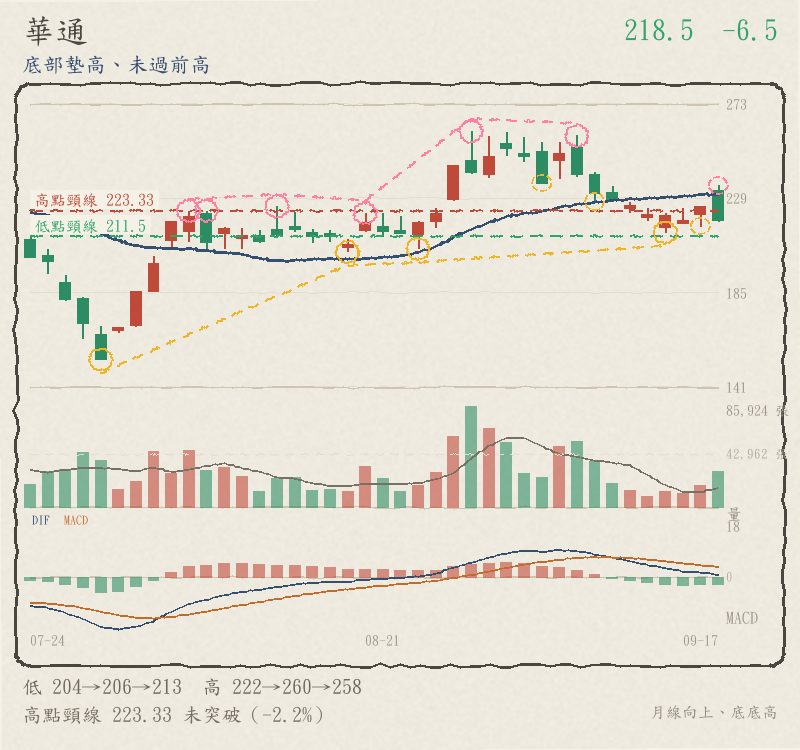
今天收黑、成交量也比平均少、跌破月線 230.725，離頸線 260 還差 16.0%，底部還在墊高（但高點沒同步創高）。
- 月線位置：收盤 218.5 在月線 230.725 之下；5 日線 220.9 也在月線之下（短均在下）；月線向上、5 日線走平或向下
- 量能：成交量是 20 日均量的 0.90 倍，比 20 日均量少一些
- 關鍵價位：頸線 260 還沒突破，差 16.0%；最近轉折高點 258（低於 15.3%）；最近轉折低點 213（高於 2.6%）
- 轉折結構：低點 204、205.5、213 墊高 4.4%（底底高），但高點 222、260、258 沒有同步創高；還沒確認的轉折低點 09-08 227.5、09-16 216；還沒確認的轉折高點 09-17 235（圖上虛線小圈）
區間或轉弱 成交金額 66.91 億・全榜第 41 名（上市第 32 名）
好條件 2/8：外資買超、量價攻擊（收紅＋大量）
不好條件 3/8：相對大盤弱、在月線之下、月線下彎
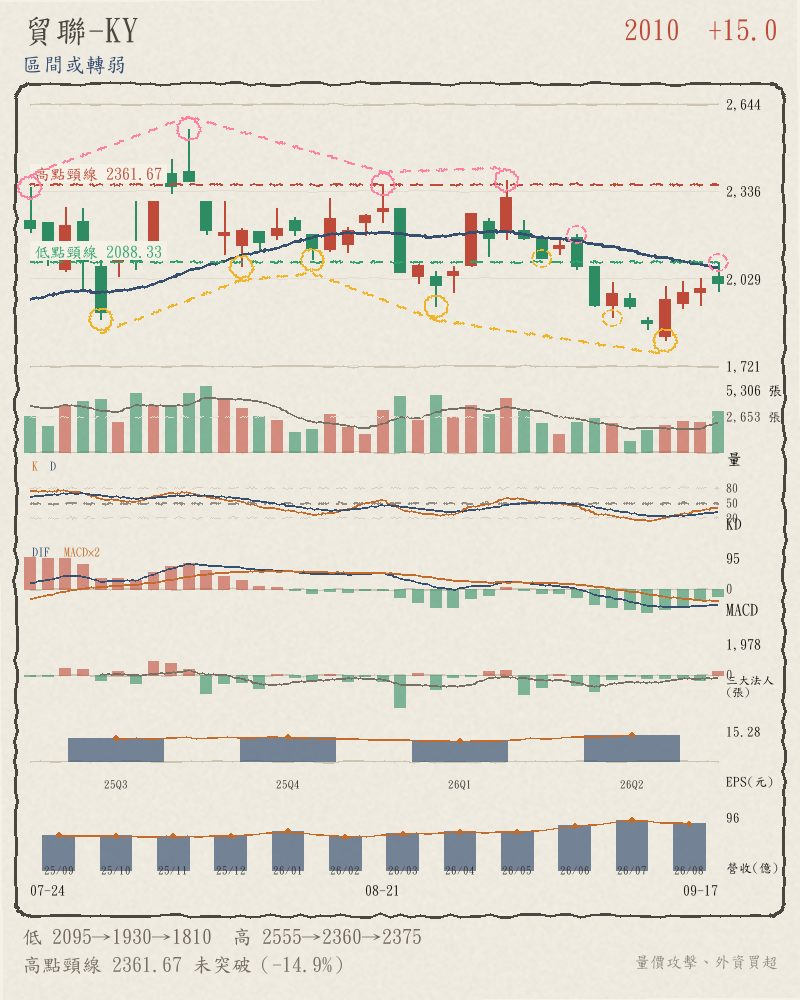
今天帶量收紅、跌破月線 2067.25，離頸線 2375 還差 15.4%，轉折還沒走出明顯方向。
- 月線位置：收盤 2010 在月線 2067.25 之下；5 日線 1963 也在月線之下（短均在下）；月線走平或向下、5 日線走平或向下
- 量能：成交量是 20 日均量的 1.20 倍，比 20 日均量大不少；收紅又量增，量價配合
- 關鍵價位：頸線 2375 還沒突破，差 15.4%；最近轉折高點 2375（低於 15.4%）；最近轉折低點 1810（高於 11.0%）
- 轉折結構：低點 2095、1930、1810 與高點 2555、2360、2375 都沒有明顯遞增，屬於區間震盪或轉弱；還沒確認的轉折低點 09-03 2100、09-09 1890；還沒確認的轉折高點 09-07 2185、09-17 2085（圖上虛線小圈）
區間或轉弱 成交金額 66.81 億・全榜第 42 名（上市第 33 名）
好條件 3/8：站上月線、相對大盤強、外資買超
不好條件 1/8：月線下彎
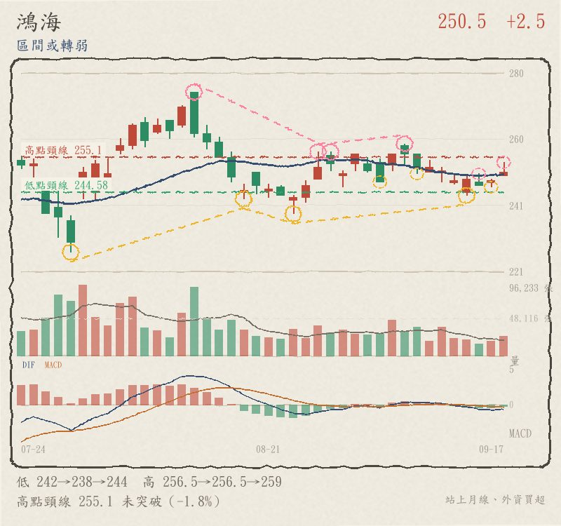
今天收紅、但成交量比平均少、站上月線 249.8，離頸線 259 還差 3.3%，轉折還沒走出明顯方向。
- 月線位置：收盤 250.5 在月線 249.8 之上；5 日線 248.3 也在月線之下（短均在下）；月線走平或向下、5 日線走平或向下
- 量能：成交量是 20 日均量的 0.91 倍，比 20 日均量少一些；收紅但量縮，量價背離
- 關鍵價位：頸線 259 還沒突破，差 3.3%；最近轉折高點 259（低於 3.3%）；最近轉折低點 243.5（高於 2.9%）
- 轉折結構：低點 242.5、238、243.5 與高點 256.5、256.5、259 都沒有明顯遞增，屬於區間震盪或轉弱；還沒確認的轉折低點 09-08 250、09-16 246；還沒確認的轉折高點 09-15 250、09-17 253.5（圖上虛線小圈）
區間或轉弱 成交金額 65.72 億・全榜第 44 名（上市第 34 名）
好條件 2/8：外資買超、量價攻擊（收紅＋大量）
不好條件 3/8：相對大盤弱、在月線之下、月線下彎
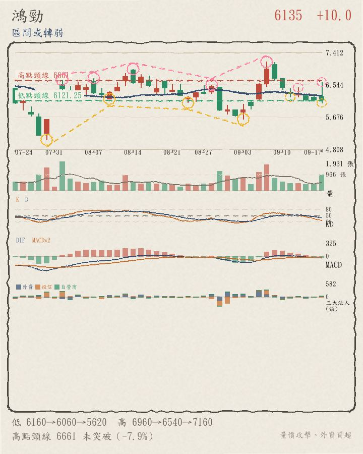
今天帶量收紅、跌破月線 6253.5，離頸線 6540 還差 6.2%，轉折還沒走出明顯方向。
- 月線位置：收盤 6135 在月線 6253.5 之下；5 日線 6202 也在月線之下（短均在下）；月線走平或向下、5 日線走平或向下
- 量能：成交量是 20 日均量的 1.64 倍，比 20 日均量大不少；收紅又量增，量價配合
- 關鍵價位：頸線 6540 還沒突破，差 6.2%；最近轉折高點 7160（低於 14.3%）；最近轉折低點 5620（高於 9.2%）
- 轉折結構：低點 6160、6060、5620 與高點 6960、6540、7160 都沒有明顯遞增，屬於區間震盪或轉弱；還沒確認的轉折低點 09-11 6210、09-17 6055；還沒確認的轉折高點 09-14 6470、09-17 6615（圖上虛線小圈）
底部墊高、未過前高 成交金額 65.63 億・全榜第 45 名（上市第 35 名）
好條件 2/8：月線向上、底底高
不好條件 4/8：今日下跌、相對大盤弱、在月線之下、外資賣超
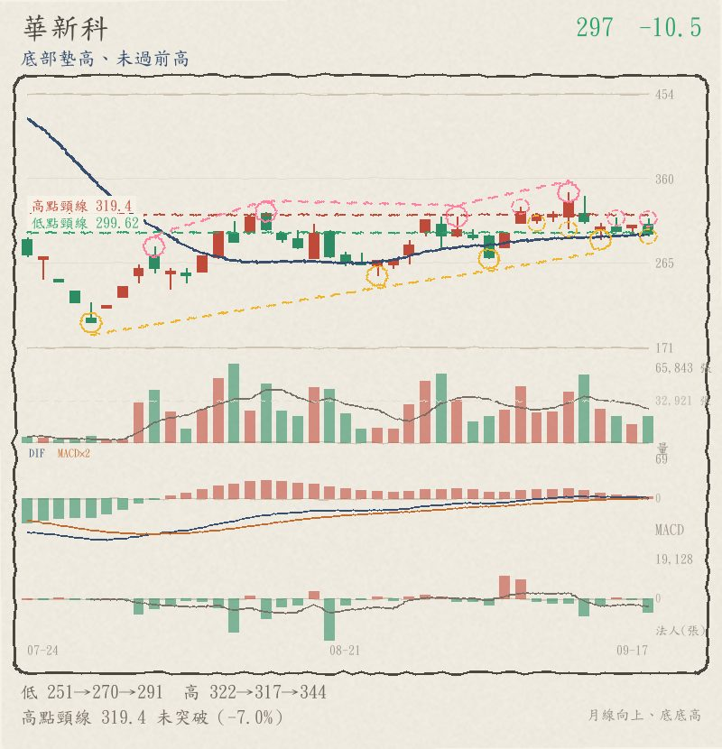
今天收黑、成交量也比平均少、跌破月線 297.2，離頸線 344 還差 13.7%，底部還在墊高（但高點沒同步創高）。
- 月線位置：收盤 297 在月線 297.2 之下；5 日線 304.3 也在月線之上（短均在上）；月線向上、5 日線走平或向下
- 量能：成交量是 20 日均量的 0.71 倍，比 20 日均量少很多
- 關鍵價位：頸線 344 還沒突破，差 13.7%；最近轉折高點 344（低於 13.7%）；最近轉折低點 291（高於 2.1%）
- 轉折結構：低點 251、270、291 墊高 15.9%（底底高），但高點 322、317、344 沒有同步創高；還沒確認的轉折低點 09-10 303、09-17 295；還沒確認的轉折高點 09-15 315.5、09-17 314.5（圖上虛線小圈）
區間或轉弱 成交金額 289.39 億・全榜第 4 名（上櫃第 1 名）
好條件 1/8：外資買超
不好條件 6/8：今日下跌、相對大盤弱、在月線之下、量增下跌（出貨）、月線下彎、收盤跌破前一日低點
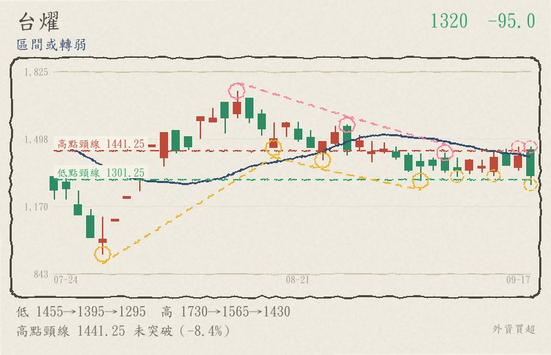
今天帶量收黑、跌破月線 1412，離頸線 1565 還差 15.7%，轉折還沒走出明顯方向。
- 月線位置：收盤 1320 在月線 1412 之下；5 日線 1376 也在月線之下（短均在下）；月線走平或向下、5 日線向上
- 量能：成交量是 20 日均量的 4.09 倍，比 20 日均量大不少；收黑卻量增，量價背離
- 關鍵價位：頸線 1565 還沒突破，差 15.7%；最近轉折高點 1430（低於 7.7%）；最近轉折低點 1295（高於 1.9%）
- 轉折結構：低點 1455、1395、1295 與高點 1730、1565、1430 都沒有明顯遞增，屬於區間震盪或轉弱；還沒確認的轉折低點 09-14 1320、09-17 1275；還沒確認的轉折高點 09-16 1460、09-17 1460（圖上虛線小圈）
區間或轉弱 成交金額 227.57 億・全榜第 6 名（上櫃第 2 名）
好條件 2/8：站上月線、月線向上
不好條件 4/8：今日下跌、相對大盤弱、量增下跌（出貨）、外資賣超
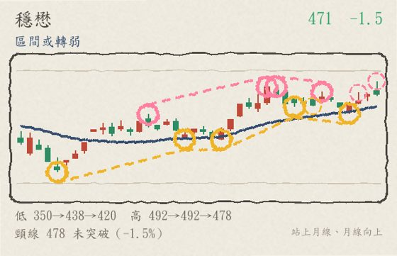
今天帶量收黑、站上月線 439.9，離頸線 478 還差 1.5%，轉折還沒走出明顯方向。
- 月線位置：收盤 471 在月線 439.9 之上；5 日線 455.8 也在月線之上（短均在上）；月線向上、5 日線向上
- 量能：成交量是 20 日均量的 1.66 倍，比 20 日均量大不少；收黑卻量增，量價背離
- 關鍵價位：頸線 478 還沒突破，差 1.5%；最近轉折高點 478（低於 1.5%）；最近轉折低點 420（高於 12.1%）
- 轉折結構：低點 349.5、438.5、420 與高點 492、492、478 都沒有明顯遞增，屬於區間震盪或轉弱；還沒確認的轉折低點 09-08 440；還沒確認的轉折高點 09-15 476、09-17 507（圖上虛線小圈）
區間或轉弱 成交金額 148.37 億・全榜第 15 名（上櫃第 3 名）
好條件 4/8：站上月線、月線向上、突破頸線、量價攻擊（收紅＋大量）
不好條件 1/8：外資賣超
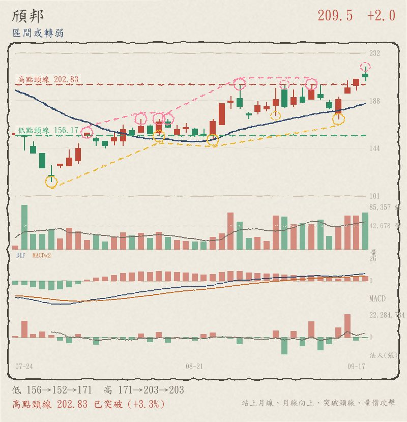
今天帶量收紅、站上月線 185.2，已突破頸線 203，轉折還沒走出明顯方向。
- 月線位置：收盤 209.5 在月線 185.2 之上；5 日線 197.4 也在月線之上（短均在上）；月線向上、5 日線向上
- 量能：成交量是 20 日均量的 1.76 倍，比 20 日均量大不少；收紅又量增，量價配合
- 關鍵價位：頸線 203 已站上；最近轉折高點 203（高於 3.2%）；最近轉折低點 171（高於 22.5%）
- 轉折結構：低點 155.5、152、171 與高點 171、203、203 都沒有明顯遞增，屬於區間震盪或轉弱；還沒確認的轉折低點 09-03 174；還沒確認的轉折高點 09-04 202.5、09-17 219（圖上虛線小圈）
底部墊高、未過前高 成交金額 146.06 億・全榜第 16 名（上櫃第 4 名）
好條件 2/8：月線向上、底底高
不好條件 6/8：今日下跌、相對大盤弱、在月線之下、量增下跌（出貨）、外資賣超、收盤跌破前一日低點
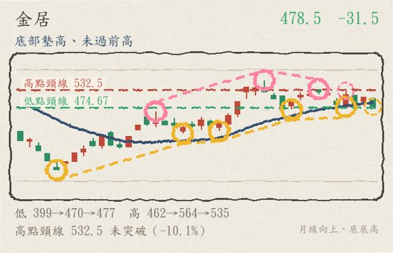
今天帶量收黑、跌破月線 493.15，離頸線 535 還差 10.6%，底部還在墊高（但高點沒同步創高）。
- 月線位置：收盤 478.5 在月線 493.15 之下；5 日線 494.7 也在月線之上（短均在上）；月線向上、5 日線走平或向下
- 量能：成交量是 20 日均量的 1.61 倍，比 20 日均量大不少；收黑卻量增，量價背離
- 關鍵價位：頸線 535 還沒突破，差 10.6%；最近轉折高點 535（低於 10.6%）；最近轉折低點 477（高於 0.3%）
- 轉折結構：低點 399、469.5、477 墊高 19.5%（底底高），但高點 462、564、535 沒有同步創高；還沒確認的轉折低點 09-17 477.5；還沒確認的轉折高點 09-14 530（圖上虛線小圈）
高點墊高、底部不穩 成交金額 114.43 億・全榜第 23 名（上櫃第 5 名）
好條件 3/8：月線向上、頭頭高、突破頸線
不好條件 5/8：今日下跌、相對大盤弱、在月線之下、量增下跌（出貨）、外資賣超
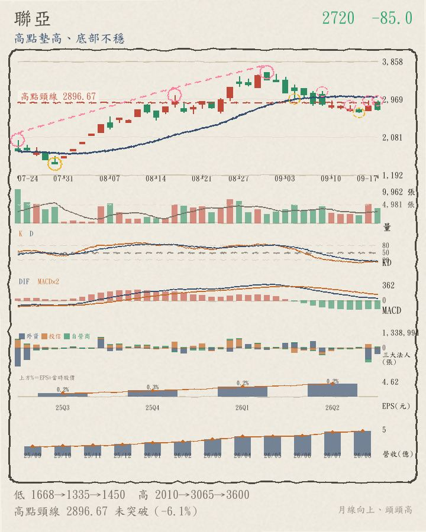
今天帶量收黑、跌破月線 3029.25，已突破頸線 2010，高點還在墊高（但底部沒同步墊高）。
- 月線位置：收盤 2720 在月線 3029.25 之下；5 日線 2751 也在月線之下（短均在下）；月線向上、5 日線走平或向下
- 量能：成交量是 20 日均量的 1.07 倍，比 20 日均量大一些；收黑卻量增，量價背離
- 關鍵價位：頸線 2010 已站上；最近轉折高點 3600（低於 24.4%）；最近轉折低點 1450（高於 87.6%）
- 轉折結構：高點 2010、3065、3600 墊高 79.1%（頭頭高），但低點 1668.18、1335、1450 沒有同步墊高；還沒確認的轉折低點 09-04 2980、09-15 2650；還沒確認的轉折高點 09-16 2930、09-17 2930（圖上虛線小圈）
上升趨勢（底底高＋頭頭高） 成交金額 92.09 億・全榜第 30 名（上櫃第 6 名）
好條件 7/8：站上月線、月線向上、底底高、頭頭高、突破頸線、相對大盤強、量價攻擊（收紅＋大量）
不好條件 1/8：外資賣超
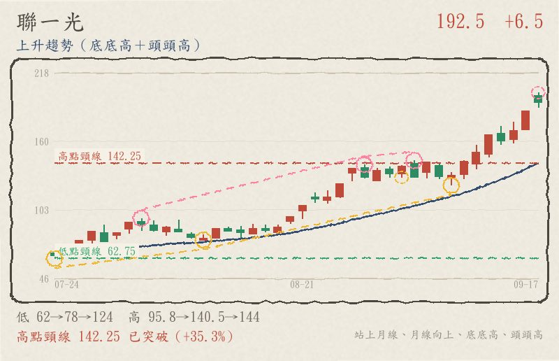
今天帶量收紅、站上月線 141.975，已突破頸線 144，轉折結構仍是底底高＋頭頭高。
- 月線位置：收盤 192.5 在月線 141.975 之上；5 日線 174.9 也在月線之上（短均在上）；月線向上、5 日線向上
- 量能：成交量是 20 日均量的 2.36 倍，比 20 日均量大不少；收紅又量增，量價配合
- 關鍵價位：頸線 144 已站上；最近轉折高點 144（高於 33.7%）；最近轉折低點 123.5（高於 55.9%）
- 轉折結構：低點 62.2、77.9、123.5 一路墊高 98.6%、高點 95.8、140.5、144 也一路墊高 50.3%，是底底高＋頭頭高；還沒確認的轉折低點 09-02 130；還沒確認的轉折高點 09-17 201（圖上虛線小圈）
區間或轉弱 成交金額 91.63 億・全榜第 31 名（上櫃第 7 名）
好條件 0/8：無
不好條件 6/8：今日下跌、相對大盤弱、在月線之下、量增下跌（出貨）、外資賣超、月線下彎
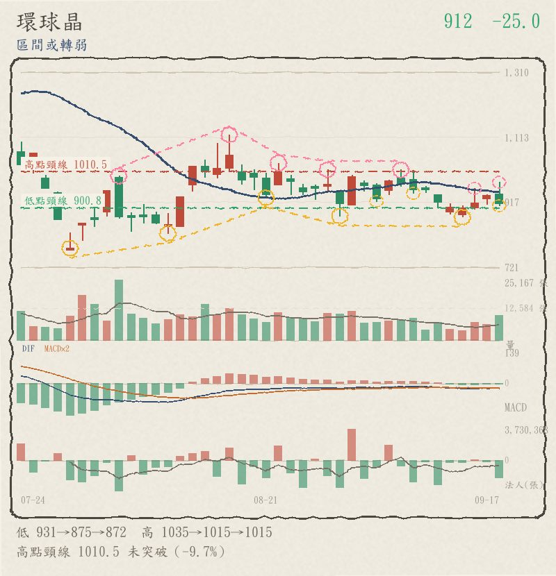
今天帶量收黑、跌破月線 947.7，離頸線 1015 還差 10.1%，轉折還沒走出明顯方向。
- 月線位置：收盤 912 在月線 947.7 之下；5 日線 913 也在月線之下（短均在下）；月線走平或向下、5 日線走平或向下
- 量能：成交量是 20 日均量的 1.27 倍，比 20 日均量大不少；收黑卻量增，量價背離
- 關鍵價位：頸線 1015 還沒突破，差 10.1%；最近轉折高點 1015（低於 10.1%）；最近轉折低點 872（高於 4.6%）
- 轉折結構：低點 931、875、872 與高點 1035、1015、1015 都沒有明顯遞增，屬於區間震盪或轉弱；還沒確認的轉折低點 09-08 944、09-17 906；還沒確認的轉折高點 09-15 959、09-17 977（圖上虛線小圈）
區間或轉弱 成交金額 88.38 億・全榜第 34 名（上櫃第 8 名）
好條件 4/8：站上月線、月線向上、相對大盤強、量價攻擊（收紅＋大量）
不好條件 1/8：外資賣超
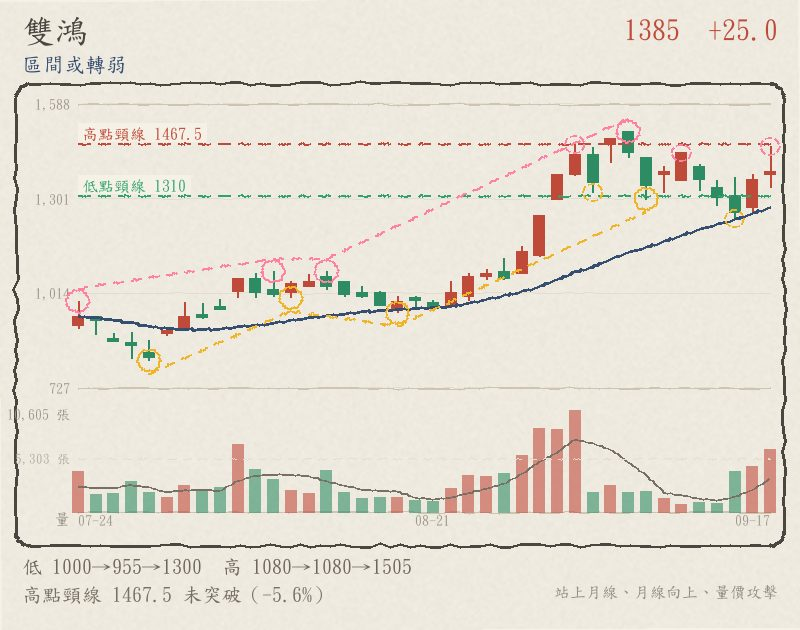
今天帶量收紅、站上月線 1274.7，離頸線 1505 還差 8.0%，轉折還沒走出明顯方向。
- 月線位置：收盤 1385 在月線 1274.7 之上；5 日線 1334 也在月線之上（短均在上）；月線向上、5 日線走平或向下
- 量能：成交量是 20 日均量的 1.81 倍，比 20 日均量大不少；收紅又量增，量價配合
- 關鍵價位：頸線 1505 還沒突破，差 8.0%；最近轉折高點 1505（低於 8.0%）；最近轉折低點 1300（高於 6.5%）
- 轉折結構：低點 1000、955、1300 與高點 1080、1080、1505 都沒有明顯遞增，屬於區間震盪或轉弱；還沒確認的轉折低點 09-03 1320、09-15 1240；還沒確認的轉折高點 09-10 1440、09-17 1460（圖上虛線小圈）
上升趨勢（底底高＋頭頭高） 成交金額 80.23 億・全榜第 37 名（上櫃第 9 名）
好條件 5/8：站上月線、月線向上、底底高、頭頭高、突破頸線
不好條件 4/8：今日下跌、相對大盤弱、量增下跌（出貨）、外資賣超
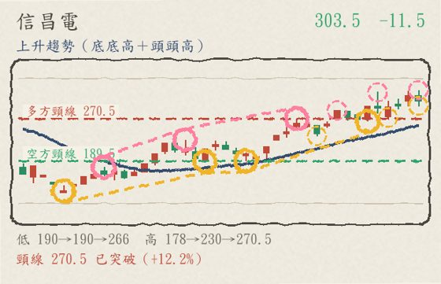
今天帶量收黑、站上月線 258.125，已突破頸線 270.5，轉折結構仍是底底高＋頭頭高。
- 月線位置：收盤 303.5 在月線 258.125 之上；5 日線 299.3 也在月線之上（短均在上）；月線向上、5 日線向上
- 量能：成交量是 20 日均量的 1.30 倍，比 20 日均量大不少；收黑卻量增，量價背離
- 關鍵價位：頸線 270.5 已站上；最近轉折高點 270.5（高於 12.2%）；最近轉折低點 265.5（高於 14.3%）
- 轉折結構：低點 189.5、190.5、265.5 一路墊高 40.1%、高點 178、230、270.5 也一路墊高 52.0%，是底底高＋頭頭高；還沒確認的轉折低點 09-14 272.5、09-17 295；還沒確認的轉折高點 09-11 321、09-17 325（圖上虛線小圈）
區間或轉弱 成交金額 66.16 億・全榜第 43 名（上櫃第 10 名）
好條件 2/8：站上月線、外資買超
不好條件 4/8：今日下跌、相對大盤弱、量增下跌（出貨）、月線下彎
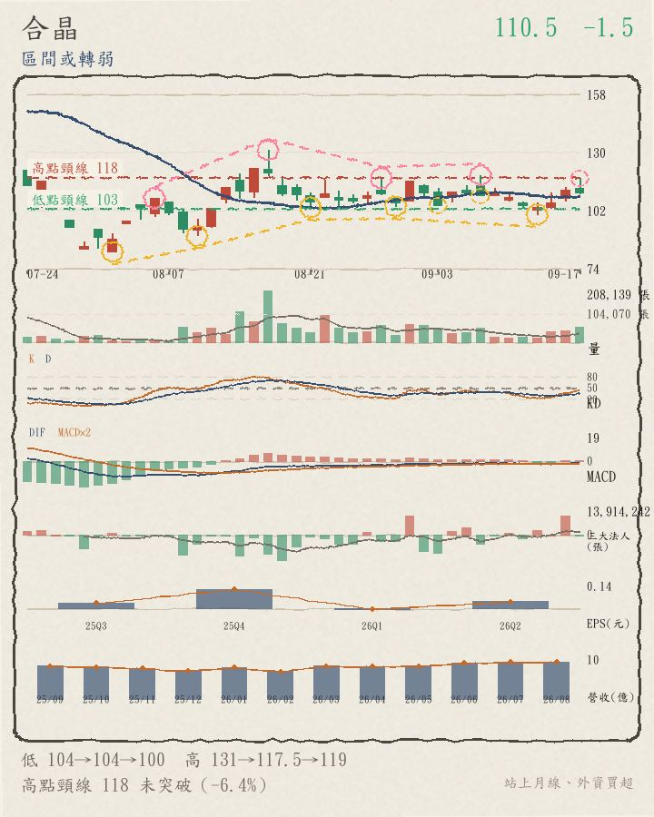
今天帶量收黑、站上月線 108.65，離頸線 119 還差 7.1%，轉折還沒走出明顯方向。
- 月線位置：收盤 110.5 在月線 108.65 之上；5 日線 107.2 也在月線之下（短均在下）；月線走平或向下、5 日線走平或向下
- 量能：成交量是 20 日均量的 1.28 倍，比 20 日均量大不少；收黑卻量增，量價背離
- 關鍵價位：頸線 119 還沒突破，差 7.1%；最近轉折高點 119（低於 7.1%）；最近轉折低點 100（高於 10.5%）
- 轉折結構：低點 103.5、104、100 與高點 131、117.5、119 都沒有明顯遞增，屬於區間震盪或轉弱；還沒確認的轉折低點 09-03 104.5、09-08 109；還沒確認的轉折高點 09-17 117.5（圖上虛線小圈）
區間或轉弱 成交金額 60.29 億・全榜第 46 名（上櫃第 11 名）
好條件 2/8：月線向上、突破頸線
不好條件 5/8：今日下跌、相對大盤弱、在月線之下、外資賣超、收盤跌破前一日低點
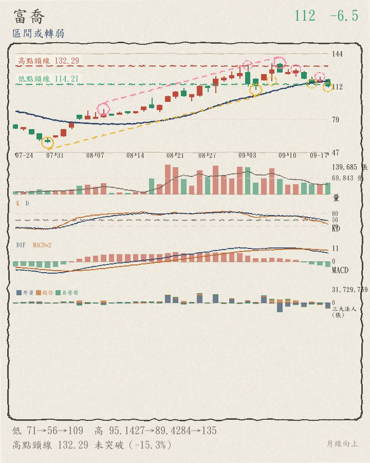
今天收黑、成交量也比平均少、跌破月線 117.392，已突破頸線 89.4284，轉折還沒走出明顯方向。
- 月線位置：收盤 112 在月線 117.392 之下；5 日線 118.5 也在月線之上（短均在上）；月線向上、5 日線走平或向下
- 量能：成交量是 20 日均量的 0.65 倍，比 20 日均量少很多
- 關鍵價位：頸線 89.4284 已站上；最近轉折高點 135（低於 17.0%）；最近轉折低點 108.571（高於 3.2%）
- 轉折結構：低點 70.857、56.2856、108.571 與高點 95.1427、89.4284、135 都沒有明顯遞增，屬於區間震盪或轉弱；還沒確認的轉折低點 09-15 114.5、09-17 111；還沒確認的轉折高點 09-11 129、09-16 121.5（圖上虛線小圈）
高點墊高、底部不穩 成交金額 55.7 億・全榜第 47 名（上櫃第 12 名）
好條件 5/8：站上月線、月線向上、頭頭高、突破頸線、相對大盤強
不好條件 1/8：外資賣超
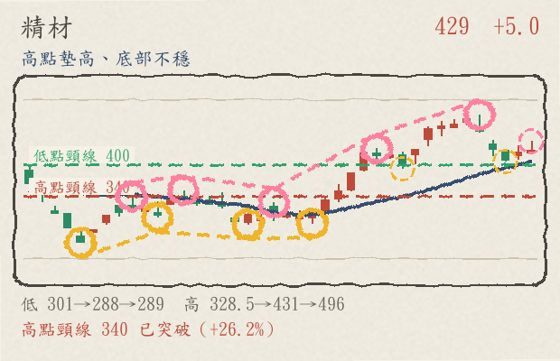
今天收紅、站上月線 407.475，已突破頸線 328.5，高點還在墊高（但底部沒同步墊高）。
- 月線位置：收盤 429 在月線 407.475 之上；5 日線 430.9 也在月線之上（短均在上）；月線向上、5 日線走平或向下
- 量能：成交量是 20 日均量的 0.97 倍，跟 20 日均量差不多
- 關鍵價位：頸線 328.5 已站上；最近轉折高點 496（低於 13.5%）；最近轉折低點 289（高於 48.4%）
- 轉折結構：高點 328.5、431、496 墊高 51.0%（頭頭高），但低點 301、288、289 沒有同步墊高；還沒確認的轉折低點 09-03 393、09-15 407；還沒確認的轉折高點 09-17 445（圖上虛線小圈）
底部墊高、未過前高 成交金額 51.91 億・全榜第 48 名（上櫃第 13 名）
好條件 1/8：底底高
不好條件 5/8：今日下跌、相對大盤弱、在月線之下、外資賣超、月線下彎
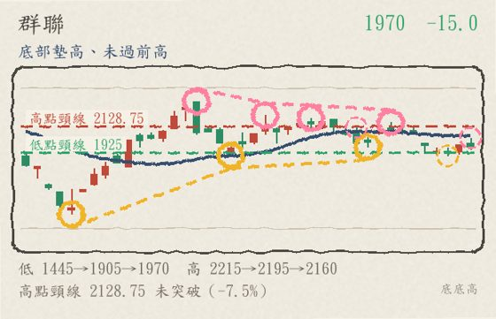
今天收黑、成交量也比平均少、跌破月線 2061.25，離頸線 2215 還差 11.1%，底部還在墊高（但高點沒同步創高）。
- 月線位置：收盤 1970 在月線 2061.25 之下；5 日線 1960 也在月線之下（短均在下）；月線走平或向下、5 日線走平或向下
- 量能：成交量是 20 日均量的 0.74 倍，比 20 日均量少很多
- 關鍵價位：頸線 2215 還沒突破，差 11.1%；最近轉折高點 2160（低於 8.8%）；最近轉折低點 1970（高於 0.0%）
- 轉折結構：低點 1445、1905、1970 墊高 36.3%（底底高），但高點 2215、2195、2160 沒有同步創高；還沒確認的轉折低點 09-15 1900；還沒確認的轉折高點 09-03 2120、09-17 2040（圖上虛線小圈）
上升趨勢（底底高＋頭頭高） 成交金額 50.83 億・全榜第 49 名（上櫃第 14 名）
好條件 8/8：站上月線、月線向上、底底高、頭頭高、突破頸線、相對大盤強、外資買超、量價攻擊（收紅＋大量）
不好條件 0/8：無
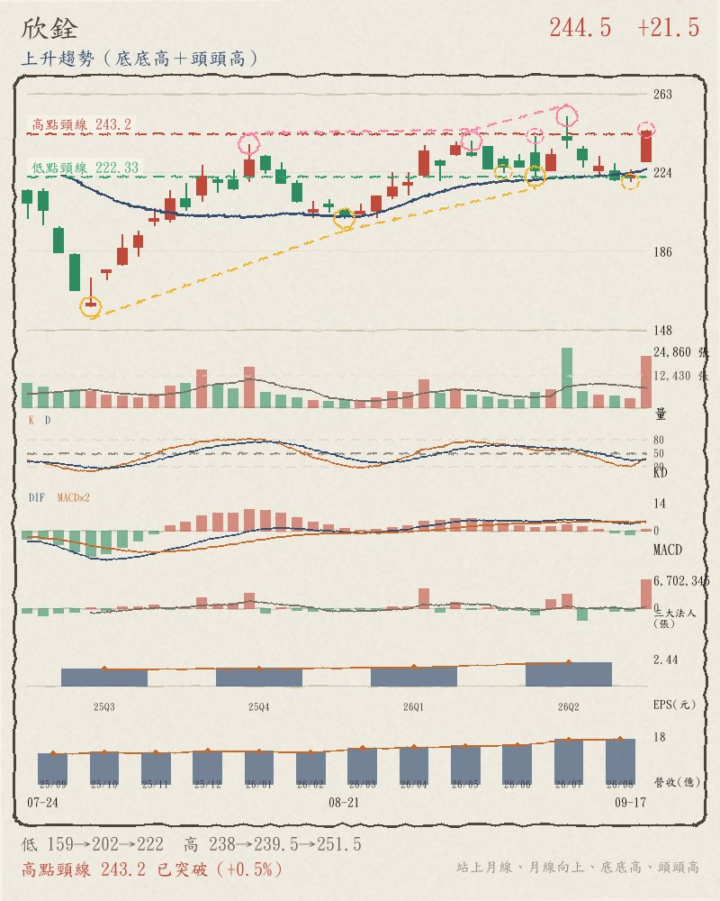
今天帶量收紅、站上月線 225.85，已突破頸線 239.5，轉折結構仍是底底高＋頭頭高。
- 月線位置：收盤 244.5 在月線 225.85 之上；5 日線 229.3 也在月線之上（短均在上）；月線向上、5 日線走平或向下
- 量能：成交量是 20 日均量的 3.48 倍，比 20 日均量大不少；收紅又量增，量價配合
- 關鍵價位：頸線 239.5 已站上；最近轉折高點 251.5（低於 2.8%）；最近轉折低點 222.5（高於 9.9%）
- 轉折結構：低點 159、202、222.5 一路墊高 39.9%、高點 238、239.5、251.5 也一路墊高 5.7%，是底底高＋頭頭高；還沒確認的轉折低點 09-04 224.5、09-16 220；還沒確認的轉折高點 09-08 242、09-17 245（圖上虛線小圈）
高點墊高、底部不穩 成交金額 50.75 億・全榜第 50 名（上櫃第 15 名）
好條件 7/8：站上月線、月線向上、頭頭高、突破頸線、相對大盤強、外資買超、量價攻擊（收紅＋大量）
不好條件 0/8：無
今天帶量收紅、站上月線 154.025，已突破頸線 163，高點還在墊高（但底部沒同步墊高）。
- 月線位置：收盤 165.5 在月線 154.025 之上；5 日線 158.7 也在月線之上（短均在上）；月線向上、5 日線向上
- 量能：成交量是 20 日均量的 2.89 倍，比 20 日均量大不少；收紅又量增，量價配合
- 關鍵價位：頸線 163 已站上；最近轉折高點 163（高於 1.5%）；最近轉折低點 152.5（高於 8.5%）
- 轉折結構：高點 157、158、163 墊高 3.8%（頭頭高），但低點 146.5、147、152.5 沒有同步墊高；還沒確認的轉折低點 09-16 153；還沒確認的轉折高點 09-14 160、09-17 171.5（圖上虛線小圈）